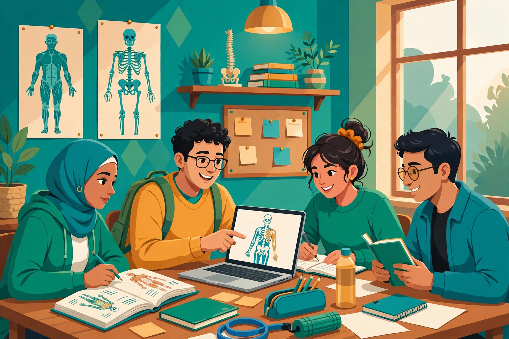

<!doctype html>
<html lang="ar" dir="rtl">
<head>
<meta charset="utf-8" />
<meta name="viewport" content="width=device-width, initial-scale=1" />
<title>سهّلي فيزيو — Sahli Physio | علاج طبيعي سنة تانية</title>
<link rel="icon" type="image/svg+xml" href="data:image/svg+xml,<svg xmlns='http://www.w3.org/2000/svg' viewBox='0 0 64 64'><rect width='64' height='64' rx='16' fill='%230F766E'/><circle cx='32' cy='13.5' r='5' fill='white'/><path d='M32 21 C25 29 39 33 32 43' stroke='white' stroke-width='5' stroke-linecap='round' fill='none'/><polyline points='10,53 23,53 27,47 32,58 36,53 54,53' stroke='%235EEAD4' stroke-width='3.5' stroke-linecap='round' stroke-linejoin='round' fill='none'/></svg>" />
<meta name="description" content="سهّلي فيزيو — Sahli Physio: منصة مواد سنة تانية علاج طبيعي، الترم الأول. فيديوهات وملفات وأسئلة لكل مادة — محتوى حي عبر Supabase Realtime." />
<link rel="manifest" href="manifest.webmanifest" />
<meta name="theme-color" content="#0F766E" />
<link rel="apple-touch-icon" href="icons/icon-192.png" />
<meta name="mobile-web-app-capable" content="yes" />
<meta name="apple-mobile-web-app-capable" content="yes" />
<meta name="apple-mobile-web-app-status-bar-style" content="default" />
<meta name="apple-mobile-web-app-title" content="سهّلي فيزيو" />
<style>
  :root{--bg:#F7F5F0;--surface:#fff;--surface2:#EFF6F4;--text:#1A2E2A;--dim:#6B7C78;--border:#DEE8E4;--accent:#0F766E;--accent2:#0B5E57}
  @media (prefers-color-scheme:dark){:root{--bg:#0E1513;--surface:#16211E;--surface2:#1C2B27;--text:#EAF2EF;--dim:#9AB0A9;--border:#2A3D38;--accent:#2DD4BF}}
  *{box-sizing:border-box} body{margin:0;font-family:system-ui,-apple-system,"Segoe UI",Tahoma,sans-serif;background:var(--bg);color:var(--text)}
  main{max-width:760px;margin:0 auto;padding:16px 16px 48px}
  button{font:inherit;cursor:pointer;min-height:44px}
  .brand{background:var(--accent);color:#fff;border-radius:24px;padding:22px}
  .brand h1{margin:0;font-size:32px;font-weight:900}
  .grid{display:grid;grid-template-columns:1fr 1fr;gap:12px;margin-top:18px}
  .subj{border:1px solid var(--border);border-radius:22px;padding:16px;text-align:right;background:var(--surface);width:100%}
  .subj .ic{font-size:28px}.subj h3{margin:8px 0 2px;font-size:18px}.subj .en2{color:var(--dim);font-size:12px;font-weight:700}.subj .counts{margin-top:8px;font-size:12px;font-weight:700;color:var(--dim)}
  .tabs{display:grid;grid-template-columns:repeat(5,1fr);gap:6px;background:var(--surface);border:1px solid var(--border);border-radius:16px;padding:6px;margin-top:14px}
  .tabs button{border:0;border-radius:12px;background:transparent;font-weight:800;color:var(--dim);font-size:13px;padding:8px 2px;line-height:1.5}
  .tabs button.on{background:var(--accent);color:#fff}
  .card{background:var(--surface);border:1px solid var(--border);border-radius:18px;padding:14px;margin-top:12px}
  .card h3{margin:0 0 6px;font-size:16px}
  .meta{color:var(--dim);font-size:13px;line-height:1.7}
  .btn{display:inline-flex;align-items:center;min-height:40px;padding:0 16px;border-radius:999px;background:var(--accent);color:#fff;text-decoration:none;font-weight:800;border:0}
  .btn.ghost{background:var(--surface);color:var(--text);border:1px solid var(--border)}
  .btn.white{background:#fff;color:var(--accent2)}
  .empty{border:1.5px dashed var(--border);border-radius:18px;padding:32px 16px;text-align:center;color:var(--dim);margin-top:12px;background:var(--surface)}
  .ans{display:none;border-top:1px dashed var(--border);margin-top:10px;padding-top:10px;white-space:pre-wrap;line-height:1.8}
  .ans.open{display:block}
  input,select,textarea{width:100%;font:inherit;padding:11px 12px;border-radius:12px;border:1px solid var(--border);background:var(--bg);color:var(--text);margin:4px 0 12px}
  label{font-weight:800;font-size:14px}
  .row{display:flex;gap:8px;flex-wrap:wrap;align-items:center}
  .pill{border-radius:999px;background:var(--surface2);padding:2px 10px;font-size:12px;font-weight:800}
  footer{text-align:center;color:var(--dim);font-size:13px;margin-top:28px}
  .note{background:#FEF3C7;color:#92400E;border-radius:14px;padding:12px 14px;font-size:14px;line-height:1.8;margin-top:12px}
  .note.ok{background:#D1FAE5;color:#065F46}
  @media (prefers-color-scheme:dark){.note{background:#3a2f10;color:#FCD34D}.note.ok{background:#0B3527;color:#6EE7B7}}
  .live-dot{display:inline-block;width:9px;height:9px;border-radius:50%;background:#34D399;margin-left:6px;vertical-align:middle}
  /* أنيميشن — نفس روح المنصة الرئيسية */
  @keyframes logo-breathe{0%,100%{transform:scale(1)}50%{transform:scale(1.14)}}
  @keyframes logo-ring{0%{transform:scale(1);opacity:.55}70%{transform:scale(1.55);opacity:0}100%{transform:scale(1.55);opacity:0}}
  @keyframes float-y{0%,100%{transform:translateY(0)}50%{transform:translateY(-7px)}}
  @keyframes fade-up{from{opacity:0;transform:translateY(16px)}to{opacity:1;transform:translateY(0)}}
  @keyframes hero-zoom{from{opacity:0;transform:scale(1.06)}to{opacity:1;transform:scale(1)}}
  /* هيكل تحميل (skeleton): بيظهر بدل نصوص «لسه مفيش» والأصفار لحد ما
     بيانات Supabase توصل فعلًا — مفيش حالة فارغة بتتكتب أثناء التحميل */
  @keyframes skel-pulse{0%,100%{opacity:1}50%{opacity:.4}}
  .skel{background:var(--surface2);border-radius:14px;animation:skel-pulse 1.3s ease-in-out infinite}
  .logo-wrap{position:relative;display:inline-flex}
  .logo-ic{animation:logo-breathe 2.2s ease-in-out infinite;background:#fff;border-radius:20px;width:60px;height:60px;display:flex;align-items:center;justify-content:center;font-size:30px;box-shadow:0 6px 16px rgba(0,0,0,.2)}
  .logo-ring{position:absolute;inset:0;border-radius:20px;border:3px solid rgba(255,255,255,.55);animation:logo-ring 2.2s ease-out infinite}
  .fade-up{animation:fade-up .55s cubic-bezier(.22,1,.36,1) both}
  .float{animation:float-y 3.6s ease-in-out infinite}
  .hero-img{width:100%;height:180px;object-fit:cover;display:block;animation:hero-zoom .9s ease-out both}
  .sem-btn{width:100%;text-align:right;background:var(--surface);border:2px solid var(--border);border-radius:22px;padding:18px;display:flex;gap:14px;align-items:center;box-shadow:0 2px 8px rgba(0,0,0,.05);transition:transform .2s,box-shadow .2s}
  .sem-btn:hover{transform:translateY(-2px);box-shadow:0 8px 20px rgba(0,0,0,.1)}
  .sem-btn .ic{font-size:32px;background:var(--surface2);border-radius:16px;width:60px;height:60px;display:flex;align-items:center;justify-content:center;flex-shrink:0}
  .sem-btn h3{margin:0;font-size:22px}.sem-btn .meta2{color:var(--dim);font-size:13px;font-weight:700;margin-top:2px}
  .subj{padding:0;overflow:hidden}
  .subj .thumb{width:100%;height:104px;object-fit:cover;display:block}
  .subj .body{padding:12px 14px 14px}
  .subj .open-pill{display:inline-block;margin-top:10px;background:var(--accent);color:#fff;border-radius:999px;padding:5px 14px;font-size:12px;font-weight:800}
  @media (prefers-reduced-motion:reduce){.logo-ic,.logo-ring,.float,.fade-up,.hero-img,.skel{animation:none!important}}
</style>
</head>
<body>
<main id="app"></main>
<footer>سهّلي فيزيو · Sahli Physio — علاج طبيعي · كفر الشيخ<div dir="ltr" style="margin-top:6px;font-weight:700;letter-spacing:.04em">Made By <span style="color:var(--accent);font-weight:900">Abdelrhman Safwat</span></div></footer>

<script>
"use strict";
/* =====================================================================
   إعدادات Supabase — املأ القيمتين دول مرة واحدة بس:
   Supabase Dashboard → Settings → API → Project URL + anon public key
   وقبلها نفّذ ملف supabase-setup.sql (جداول + Realtime + سياسات أمان).
   ===================================================================== */
const SUPABASE_URL = "https://hxfmjsqclyveuenquivj.supabase.co";
const SUPABASE_ANON_KEY = "sb_publishable_OCCYtuz890QNDy9GpkBarg_CqjhCbt5";
/* مفتاح VAPID العام لإشعارات الدفع (Web Push) — صاحب الموقع بيحط
   القيمة هنا بعد توليد زوج المفاتيح (npx web-push generate-vapid-keys)
   وبعد تنفيذ قسم 18 في supabase-setup.sql ونشر دالة send-push.
   طول ما القيمة فاضية، كارت الإشعارات بيقول للطلاب «هتتفعّل قريب»
   وصفحة الأدمن بتعرض خطوات التشغيل — المفتاح العام آمن يظهر هنا
   (هو معمول للعلن أصلًا)، أما المفتاح الخاص فمش بيتحط في أي ملف
   موقع: بيتحفظ سرًّا في الدالة وفي إعدادات المنصة الرئيسية بس */
const VAPID_PUBLIC_KEY = "BEK_DTMNtKXqXoo25weSO5V9aaw4UsYioP5b2w8Ytg0dwEMIEHU0a3tBEA5cZU2tOrxqVLtoAMN4YrsUK-9fYsw";
/* دخول الأدمن بالكود بس — من غير إيميل ولا باسورد في الصفحة.
   ملحوظة أمان: الكود نفسه مش مكتوب في الملف ده خالص — التحقق بيتم
   على السيرفر عبر دالة Supabase RPC اسمها check_admin_code (قسم 6 في
   supabase-setup.sql)، فالكود لا يصل للمتصفح أبدًا. وبعد ما الكود
   يطلع صح، الصفحة بتسجّل دخول Supabase Auth تلقائيًا بحساب الأدمن
   المشترك (لأن الكتابة مقفولة بـ RLS على authenticated): الإيميل
   بييجي من دالة admin_signin_email (قسم 12) اللي بترجّعه بس لو
   الكود صح، وباسورد الحساب مضبوطة على السيرفر على نفس قيمة الكود
   (مزامنة قسم 12) — فلا الكود ولا الإيميل ولا أي باسورد مكتوب هنا. */
const LIVE = () => Boolean(SUPABASE_URL && SUPABASE_ANON_KEY);

/* المواد الثمانية — مرآة لجدول subjects (وتُقرأ من الجدول نفسه عند تفعيل Supabase) */
let SUBJECTS=[
 {slug:"neuro-anatomy",en:"Neuro-anatomy",ar:"تشريح الجهاز العصبي",icon:"🧠"},
 {slug:"biomechanics",en:"Biomechanics",ar:"الميكانيكا الحيوية",icon:"🦴"},
 {slug:"electro-therapy",en:"Electro-therapy",ar:"العلاج بالكهرباء",icon:"⚡"},
 {slug:"physiology-3",en:"Physiology 3",ar:"فسيولوجيا ٣",icon:"🫀"},
 {slug:"muscle-test",en:"Muscle Test",ar:"اختبار العضلات",icon:"💪"},
 {slug:"hydro-therapy",en:"Hydro-therapy",ar:"العلاج المائي",icon:"💧"},
 {slug:"biochemistry-2",en:"Biochemistry 2",ar:"الكيمياء الحيوية ٢",icon:"🧪"},
 {slug:"public-health",en:"Public Health",ar:"الصحة العامة",icon:"🏥"}
];
const TABLE_FOR_KIND={video:"videos",recording:"recordings",file:"files",summary:"summaries",question:"questions"};
const KIND_ICONS={video:"🎬",recording:"🎙️",file:"📁",summary:"📝",question:"❓"};
function kindNameStatic(i){const n={video:"فيديو",recording:"ريكورد",file:"ملف",summary:"ملخص",question:"سؤال وجواب"}[i.kind]||i.kind;
  return (i.kind==="file"||i.kind==="recording"||i.kind==="summary")?n+" "+(i.file_category==="section"?"سكشن":"محاضرة"):n}
const LS_KEY="sahli-physio-local-items";
/* السيمسترات: سيمستر 1 افتراضيًا (مواده الثمانية)، وأي سيمستر/مادة يضيفه
   الأدمن من النسخة دي بيتحفظ محليًا على جهازه وبيندمج مع الحي */
let SEMESTERS=[{slug:"semester-1",ar:"سيمستر 1",en:"Semester 1",term:"الترم الأول"}];
const SUBJECT_IMAGES={"neuro-anatomy":"assets/neuro.webp","biomechanics":"assets/biomechanics.webp","electro-therapy":"assets/electro.webp","physiology-3":"assets/physiology.webp","muscle-test":"assets/muscle.webp","hydro-therapy":"assets/hydro.webp","biochemistry-2":"assets/biochem.webp","public-health":"assets/public-health.webp"};
SUBJECTS=SUBJECTS.map(s=>({...s,semester:"semester-1",color:"#0F766E"}));
const lsGet=(k,d)=>{try{return JSON.parse(localStorage.getItem(k)||"null")??d}catch{return d}};
const lsSet=(k,v)=>{try{localStorage.setItem(k,JSON.stringify(v))}catch{}};
const allSemesters=()=>{const extra=lsGet("sahli-semesters",[]);const base=SEMESTERS.filter(s=>!extra.some(e=>e.slug===s.slug));return [...base,...extra]};
const allSubjects=()=>{const extra=lsGet("sahli-local-subjects",[]);const base=SUBJECTS.filter(s=>!extra.some(e=>e.slug===s.slug));return [...base,...extra]};
const cohortLabel=()=>lsGet("sahli-cohort","سنة تانية · دفعة PT13");
const adminName=()=>{try{return sessionStorage.getItem("sahli-admin-name")||""}catch{return""}};
/* موقع الزائر التقريبي: المتصفح نفسه بيحدد عنوانه العام والمدينة/الدولة
   عبر خدمة IP-geolocation مجانية (ipwho.is، وبديلها ipapi.co) مرة واحدة
   في الجلسة وبيخزّن النتيجة في sessionStorage. أي فشل (حجب/شبكة) بيرجّع
   قيمًا فارغة وبتتسجل الزيارة من غير موقع بدل ما تضيع. */
let geoPromise=null;
function visitorGeo(){
  if(geoPromise)return geoPromise;
  geoPromise=(async()=>{
    const empty={ip:null,city:null,country:null};
    try{const c=sessionStorage.getItem("sahli-geo");if(c){const p=JSON.parse(c);return{ip:p.ip||null,city:p.city||null,country:p.country||null}}}catch(e){}
    const fj=async(u)=>{const ct=new AbortController();const t=setTimeout(()=>ct.abort(),3000);try{const r=await fetch(u,{signal:ct.signal});if(!r.ok)return null;return await r.json()}catch(e){return null}finally{clearTimeout(t)}};
    const s=v=>(typeof v==="string"&&v.trim())?v.trim():null;
    let geo=empty;
    /* ٣ خدمات مجانية بالترتيب: فشل أو تحديد معدل (rate limit) في واحدة
       — بيحصل متقطعًا خصوصًا ورا NAT مشترك — بيجرّب اللي بعدها فورًا */
    const a=await fj("https://ipwho.is/");
    if(a&&a.success!==false&&s(a.ip))geo={ip:s(a.ip),city:s(a.city),country:s(a.country)};
    else{const b=await fj("https://ipapi.co/json/");
      if(b&&s(b.ip))geo={ip:s(b.ip),city:s(b.city),country:s(b.country_name)};
      else{const c=await fj("https://freeipapi.com/api/json/");if(c&&s(c.ipAddress))geo={ip:s(c.ipAddress),city:s(c.cityName),country:s(c.countryName)}}}
    /* النتيجة الفاشلة (من غير IP) لا تُخزَّن — المحاولة الجاية تعيد الطلب */
    if(geo.ip){try{sessionStorage.setItem("sahli-geo",JSON.stringify(geo))}catch(e){}}
    return geo;
  })();
  /* نتيجة فاضية (الخدمة محجوبة/بطيئة) لا تتلزّق طول الجلسة: الزيارة
     الجاية تعيد المحاولة بدل ما كل زيارات الجلسة تطلع «غير متاح» */
  geoPromise.then(g=>{if(!g.ip)geoPromise=null});
  return geoPromise;
}
/* تسجيل زيارة (صفحة + وقت + IP/موقع الزائر من متصفحه) — محليًا + رفع لجدول visits في Supabase.
   التسجيل بيستنى تحديد الموقع بحد أقصى ٢٫٥ ثانية: أول زيارة في الجلسة
   بتحمل الـ IP والمدينة والدولة زي اللي بعدها، ولو الخدمة بطيئة أو
   محجوبة الزيارة تتسجل من غير موقع بدل ما تضيع أو تتأخر */
function logVisit(page){
  const timeout=new Promise(res=>setTimeout(()=>res({ip:null,city:null,country:null}),2500));
  Promise.race([visitorGeo(),timeout]).then(geo=>{
    const v={page,ip:geo.ip,city:geo.city,country:geo.country,created_at:new Date().toISOString()};
    const arr=lsGet("sahli-visits",[]);arr.push(v);lsSet("sahli-visits",arr.slice(-2000));
    if(LIVE()&&sb){sb.from("visits").insert({page,ip:geo.ip,city:geo.city,country:geo.country}).then(()=>{},()=>{})}
  });
}
/* تسجيل نشاط أدمن باسمه — محليًا + محاولة رفع لجدول activity_log */
function logActivity(action,kind,subject_slug,item_title){
  const a={admin_name:adminName()||"أدمن",action,kind:kind||"",subject_slug:subject_slug||"",item_title:String(item_title||"").slice(0,300),created_at:new Date().toISOString()};
  const arr=lsGet("sahli-activity",[]);arr.push(a);lsSet("sahli-activity",arr.slice(-1000));
  if(LIVE()&&sb&&session){sb.from("activity_log").insert({admin_name:a.admin_name,action,kind:a.kind,subject_slug:a.subject_slug,item_title:a.item_title}).then(()=>{},()=>{})}
}
let published=[];            // صفوف موحّدة الشكل من جداول Supabase (أو content.json احتياطيًا)
let examsList=[], anonAll=[], featuresOpen=false, anonAsked=false, homeQuery="";
let sb=null;                 // عميل Supabase
let session=null;            // جلسة الأدمن (Supabase Auth)
let adminUnlocked=false;     // بوابة كود الأدمن (التحقق من السيرفر عبر RPC)
/* رسالة موحّدة لما الكود يفتح الأدمن للعرض لكن جلسة الكتابة مش شغالة */
const WRITE_SESSION_MSG="الكتابة مش مفعّلة لسه: جلسة أدمن Supabase مش شغالة. التفعيل بيتم مرة واحدة بس — نفّذ قسم 12 من ملف supabase-setup.sql في Supabase (SQL Editor)، وبعدين اقفل الأدمن وادخل بالكود من جديد، وهتشتغل الإضافة والتعديل والحذف بالكود بس.";
let view={name:"home"};
let liveInitDone=false, safetyTimer=null, lastAutoRefresh=0;
/* false لحد ما أول تحميل كامل للبيانات يخلص (حي من Supabase أو احتياطي) —
   وطول ما هي false الأقسام اللي بتستنى بيانات بتعرض هيكل تحميل (skeleton)
   بدل نصوص الحالة الفارغة («لسه مفيش…») أو أصفار العدادات */
let dataReady=false;
let semConfirmPending=false;
let announcementText="";
let annPending=null, annConfirmPending=false, annClearPending=false;
let remindOpen=false, rmDelayMin=60, rmUseCustom=false;
let suggestOpen=false;
let semPending=null;
let tab="video", visible=10, editing=null; // editing = {kind,id}
let confirmDeleteKey=null; // (لم يعد مستخدمًا — تأكيد الحذف بقى بنافذة askConfirm الداخلية)
const $app=document.getElementById("app");
const esc=s=>String(s??"").replace(/[&<>"']/g,c=>({"&":"&amp;","<":"&lt;",">":"&gt;",'"':"&quot;","'":"&#39;"}[c]));
const localItems=()=>{try{return JSON.parse(localStorage.getItem(LS_KEY)||"[]")}catch{return[]}};
const saveLocal=items=>localStorage.setItem(LS_KEY,JSON.stringify(items));
const allItems=()=>LIVE()?[...published]:[...localItems(),...published];
const bySubject=slug=>allItems().filter(i=>i.subject_slug===slug).sort(byDisplayOrder);
const subj=slug=>allSubjects().find(s=>s.slug===slug)||allSubjects()[0];
const ytId=u=>{const m=String(u||"").match(/(?:youtube\.com\/(?:watch\?v=|embed\/|shorts\/)|youtu\.be\/)([\w-]{6,})/);return m?m[1]:null};
const tgPost=u=>{const m=String(u||"").match(/(?:t\.me|telegram\.me)\/(?:s\/)?([A-Za-z0-9_]{3,})\/(\d+)/);return (m&&m[1]!=="c")?m[1]+"/"+m[2]:null};

/* الجداول الحية في Supabase بتربط المحتوى بالمادة بمعرّفها (subject_id — uuid)
   مش باسمها (subject_slug)، وجدول الأسئلة أعمدته question/answer.
   الخريطتين دول بيترجموا بين المعرّف والاسم عشان باقي الكود يفضل شغال بالاسم. */
let subjectSlugById={}, subjectIdBySlug={};
const FALLBACK_ICONS={"neuro-anatomy":"🧠","biomechanics":"🦴","electro-therapy":"⚡","physiology-3":"🫀","muscle-test":"💪","hydro-therapy":"💧","biochemistry-2":"🧪","public-health":"🏥"};

/* تحويل صف من جدول متخصص لشكل موحّد */
function unify(kind,row){return {id:row.id,kind,
  subject_slug:row.subject_slug||subjectSlugById[row.subject_id]||"",
  title:row.title||(kind==="question"?String(row.question_text||row.question||"").slice(0,300):""),
  url:row.url||null,file_type:row.file_type||null,file_category:row.file_category||"lecture",description:row.description||null,
  question_text:row.question_text||row.question||null,answer_text:row.answer_text||row.answer||null,
  topic:row.topic||null,image_url:row.image_url||null,sort_order:(typeof row.sort_order==="number"?row.sort_order:null),created_at:row.created_at}}

/* مفتاح ترتيب العرض الفعّال: sort_order المحفوظ، ولو لسه مش موجود
   (قبل تنفيذ قسم 17 أو لعنصر قديم) يبقى ‎-id‎ = الأحدث أولًا زي العرض الحالي */
const ordOf=i=>(typeof i.sort_order==="number"&&isFinite(i.sort_order))?i.sort_order:-Number(i.id||0);
const byDisplayOrder=(a,b)=>ordOf(a)-ordOf(b)||(Number(b.id||0)-Number(a.id||0));

async function fetchAllLive(){
  /* كل الجداول بتتجاب بالتوازي في طلب واحد مجمّع (Promise.all) بدل
     الانتظار التسلسلي جدول ورا جدول — أول عرض بييجي أسرع بكتير.
     كل استعلام محمي لوحده: جدول ناقص أو فشل مؤقت يرجّع undefined فالأقسام
     التانية تكمل عادي (الريكوردات/الملخصات قسم 14، الامتحانات والأسئلة
     المجهولة قسم 10 — غياب أي جدول ما يوقفش باقي الموقع). */
  const rows=await Promise.all([
    sb.from("semesters").select("*").order("sort_order"),
    sb.from("subjects").select("*"),
    sb.from("videos").select("*").order("id",{ascending:false}),
    sb.from("recordings").select("*").order("id",{ascending:false}),
    sb.from("files").select("*").order("id",{ascending:false}),
    sb.from("summaries").select("*").order("id",{ascending:false}),
    sb.from("questions").select("*").order("id",{ascending:false}),
    sb.from("site_settings").select("*").eq("key","announcement").maybeSingle(),
    sb.from("exams").select("*").order("exam_date"),
    sb.from("anon_questions").select("*").order("id",{ascending:false}),
    sb.from("anon_replies").select("*").order("id")
  ].map(p=>Promise.resolve(p).then(r=>r&&!r.error?r.data:undefined).catch(()=>undefined)));
  const [sems,subs,v,rec,f,sum,q,st,ex,aq,ar]=rows;
  if(sems&&sems.length)SEMESTERS=sems.map(s=>({slug:s.slug,ar:s.name_ar,en:s.name_en||"",term:s.term_label||""}));
  if(subs&&subs.length){
    subjectSlugById={}; subjectIdBySlug={};
    for(const s of subs){if(s.id&&s.slug){subjectSlugById[s.id]=s.slug;subjectIdBySlug[s.slug]=s.id}}
    SUBJECTS=subs.map(s=>({slug:s.slug,en:s.name_en,ar:s.name_ar,icon:FALLBACK_ICONS[s.slug]||"📘",semester:"semester-1",color:"#0F766E"}));
  }
  published=[
    ...(v||[]).map(r=>unify("video",r)),
    ...(rec||[]).map(r=>unify("recording",r)),
    ...(f||[]).map(r=>unify("file",r)),
    ...(sum||[]).map(r=>unify("summary",r)),
    ...(q||[]).map(r=>unify("question",r))
  ].sort(byDisplayOrder);
  if(st!==undefined)announcementText=(st&&st.value)||"";
  /* جدول الامتحانات (قسم 10 في supabase-setup.sql) */
  if(ex)examsList=ex.map(r=>({id:r.id,title:r.title,exam_type:r.exam_type||"other",subject_slug:r.subject_slug||null,exam_date:r.exam_date,note:r.note||null}));
  /* الأسئلة المجهولة (قسم 10): القراءة العامة للمنشور بس حسب سياسات RLS */
  if(aq){const reps=ar||[];
    anonAll=aq.map(q=>({id:q.id,question_text:q.question_text,answer_text:q.answer_text||null,status:q.status,created_at:q.created_at,replies:reps.filter(r=>r.question_id===q.id).map(r=>({id:r.id,reply_text:r.reply_text,created_at:r.created_at}))}));}
  dataReady=true;
}

async function load(){
  /* تحديد موقع الزائر يبدأ فورًا مع فتح الموقع — قبل تحميل المحتوى —
     عشان أول زيارة في الجلسة تلحق تحمل الـ IP والمدينة زي اللي بعدها */
  visitorGeo();
  if(LIVE()){
    // تحميل مكتبة supabase-js من CDN (ستاتيك بالكامل — مناسب لـ GitHub Pages)
    await new Promise((res,rej)=>{const s=document.createElement("script");
      s.src="https://cdn.jsdelivr.net/npm/@supabase/supabase-js@2/dist/umd/supabase.min.js";
      s.onload=res;s.onerror=rej;document.head.appendChild(s)}).catch(()=>null);
    if(window.supabase){
      sb=window.supabase.createClient(SUPABASE_URL,SUPABASE_ANON_KEY);
      /* البيانات وجلسة الأدمن بيتحمّلوا بالتوازي — أول عرض أسرع */
      const [,sessRes]=await Promise.all([
        fetchAllLive().catch(()=>{published=[]}),
        sb.auth.getSession().catch(()=>null)
      ]);
      session=(sessRes&&sessRes.data&&sessRes.data.session)||null;
      sb.auth.onAuthStateChange((_e,s)=>{session=s; if(view.name==="admin")render()});
      // ===== Supabase Realtime: أي INSERT/UPDATE/DELETE في الجداول التلاتة
      // بيوصل لكل الصفحات المفتوحة في ثوانٍ — من غير تحديث يدوي ولا إعادة نشر
      sb.channel("sahli-live")
        .on("postgres_changes",{event:"*",schema:"public",table:"subjects"},async()=>{await fetchAllLive(); if(view.name!=="admin")render()})
        .on("postgres_changes",{event:"*",schema:"public",table:"semesters"},async()=>{await fetchAllLive(); if(view.name!=="admin")render()})
        .on("postgres_changes",{event:"*",schema:"public",table:"videos"},async()=>{await fetchAllLive(); if(view.name!=="admin")render()})
        .on("postgres_changes",{event:"*",schema:"public",table:"recordings"},async()=>{await fetchAllLive(); if(view.name!=="admin")render()})
        .on("postgres_changes",{event:"*",schema:"public",table:"files"},async()=>{await fetchAllLive(); if(view.name!=="admin")render()})
        .on("postgres_changes",{event:"*",schema:"public",table:"summaries"},async()=>{await fetchAllLive(); if(view.name!=="admin")render()})
        .on("postgres_changes",{event:"*",schema:"public",table:"questions"},async()=>{await fetchAllLive(); if(view.name!=="admin")render()})
        .on("postgres_changes",{event:"*",schema:"public",table:"site_settings"},async()=>{await fetchAllLive(); if(view.name!=="admin")render()})
        .subscribe();
      liveInitDone=true;
      // شبكة أمان: تحديث دوري خفيف لو اتصال Realtime وقع (مرة واحدة بس
      // حتى لو load() اتنادت تاني عند رجوع النت)
      if(!safetyTimer)safetyTimer=setInterval(async()=>{try{const before=JSON.stringify(published);await fetchAllLive();
        if(JSON.stringify(published)!==before&&view.name!=="admin")render()}catch(e){}},30000);
      render(); return;
    }
  }
  // وضع احتياطي (Supabase غير مفعّل): content.json + إضافات محلية
  announcementText=lsGet("sahli-announcement","");
  examsList=lsGet("sahli-exams",[]);
  anonAll=lsGet("sahli-anon-questions",[]);
  try{const r=await fetch("content.json",{cache:"default"}); if(r.ok){const d=await r.json(); published=Array.isArray(d)?d:(d.items||[]);}}catch(e){published=[]}
  dataReady=true;
  render();
}
/* ---------------- تحديث تلقائي أول ما النت يرجع ----------------
   المشكلة اللي بتقابل الطالب على الموبايل: يفتح التطبيق المثبّت والنت
   مقطوع، فيفشل تحميل مكتبة Supabase أو البيانات، والموقع يفضل واقف على
   النسخة الفاضية/القديمة لحد ما يعمل ريفريش يدوي. الحل: أول ما الاتصال
   يرجع (حدث online) أو التطبيق يرجع للواجهة وفيه نت، نعيد التحميل فورًا:
   لو التحميل الحي ما كملش أصلًا نعيد load() كلها (فتُعاد محاولة تحميل
   المكتبة والبيانات)، ولو كان شغال نعيد جلب البيانات ونرسم من جديد. */
async function refreshNow(force){
  if(!LIVE())return;
  const now=Date.now();
  if(!force&&now-lastAutoRefresh<5000)return;
  lastAutoRefresh=now;
  if(!liveInitDone){await load();return}
  try{await fetchAllLive(); if(view.name!=="admin")render()}catch(e){}
}
window.addEventListener("online",()=>{refreshNow(true)});
document.addEventListener("visibilitychange",()=>{if(document.visibilityState==="visible"&&navigator.onLine)refreshNow(false)});
function counts(slug){const l=bySubject(slug);return{v:l.filter(i=>i.kind==="video").length,r:l.filter(i=>i.kind==="recording").length,f:l.filter(i=>i.kind==="file").length,s:l.filter(i=>i.kind==="summary").length,q:l.filter(i=>i.kind==="question").length}}
/* ---------------- متتبع المذاكرة: تقدم الطالب في localStorage (من غير تسجيل دخول) ---------------- */
const doneKeys=()=>lsGet("sahli-progress",[]);
const isDone=(kind,id)=>doneKeys().includes(kind+":"+id);
function toggleDone(kind,id){const k=kind+":"+id;let d=doneKeys();d=d.includes(k)?d.filter(x=>x!==k):[...d,k];lsSet("sahli-progress",d);render()}
function trackProgress(list){const t=list.filter(i=>i.kind==="video"||i.kind==="recording"||i.kind==="file"||i.kind==="summary");const dn=t.filter(i=>isDone(i.kind,i.id)).length;return{done:dn,total:t.length,pct:t.length?Math.round(dn/t.length*100):0}}
function doneCheckHtml(i){
  if(i.kind!=="video"&&i.kind!=="recording"&&i.kind!=="file"&&i.kind!=="summary")return"";
  const dn=isDone(i.kind,i.id);
  return `<label style="display:flex;align-items:center;gap:8px;margin-top:10px;padding:8px 10px;border-radius:12px;background:${dn?"#ECFDF5":"var(--surface2)"};cursor:pointer"><input type="checkbox" ${dn?"checked":""} onchange="toggleDone('${i.kind}','${i.id}')" aria-label="تحديد «${esc(i.title)}» كمُذاكر" style="width:20px;height:20px;min-height:0;accent-color:#059669"><span style="font-size:13px;font-weight:800;color:${dn?"#047857":"var(--dim)"}">${dn?"✓ ذاكرتها وخلصتها":"علّم عليها لما تذاكرها"}</span></label>`;
}
function progressBarHtml(list){
  const pr=trackProgress(list); if(!pr.total)return"";
  return `<section class="card" style="margin-top:12px"><div class="row" style="justify-content:space-between"><strong>📈 تقدمك في المادة</strong><strong style="color:var(--accent)">${pr.pct}٪</strong></div>
  <div style="height:12px;border-radius:99px;background:var(--surface2);overflow:hidden;margin-top:8px"><div style="height:100%;width:${pr.pct}%;background:#10B981;border-radius:99px"></div></div>
  <div class="meta" style="margin-top:6px">${pr.pct===100?("🏆 أنت خلصت 100% من المادة — كل العناصر ("+pr.total+") بقت تمام. عاش يا بطل!"):("أنت خلصت "+pr.pct+"% من المادة — "+pr.done+" من "+pr.total+" عنصر (فيديوهات وريكوردات وملفات وملخصات). علّم بعلامة الصح على كل عنصر تذاكره وهيتحسب هنا.")}</div>
  <div class="meta">تقدمك محفوظ على جهازك ده بس (من غير تسجيل دخول) — لو فتحت من جهاز تاني هيبدأ من الصفر.</div></section>`;
}
function subjectProgressHtml(slug){
  const pr=trackProgress(bySubject(slug)); if(!pr.total)return"";
  return `<div style="margin-top:6px"><div class="meta">${pr.pct===100?"🏆 خلصت المادة كلها!":("تقدمك: خلصت "+pr.done+" من "+pr.total)} · ${pr.pct}٪</div><div style="height:8px;border-radius:99px;background:var(--surface2);overflow:hidden;margin-top:3px"><div style="height:100%;width:${pr.pct}%;background:#10B981"></div></div></div>`;
}
/* ---------------- بحث سريع في الرئيسية ---------------- */
function homeSearch(v){homeQuery=v;const host=document.getElementById("home-results");if(host)host.innerHTML=homeResultsHtml()}
function homeResultsHtml(){
  const raw=homeQuery.trim(), q=raw.toLowerCase();
  if(!q)return `<p class="meta" style="margin-top:4px">اكتب اسم محاضرة أو دكتور أو موضوع — البحث بيدوّر في كل المواد والمحتوى مرة واحدة.</p>`;
  const sh=allSubjects().filter(s=>s.ar.includes(raw)||(s.en||"").toLowerCase().includes(q));
  const ih=allItems().filter(i=>((i.title||"")+" "+(i.question_text||"")+" "+(i.topic||"")+" "+(i.description||"")).toLowerCase().includes(q)).slice(0,15);
  if(!sh.length&&!ih.length)return `<div class="card" style="margin-top:8px;text-align:center"><span class="meta">مفيش نتائج لـ «${esc(raw)}» — جرّب كلمة تانية أو اسم المادة بالإنجليزي</span></div>`;
  return `<div class="card" style="margin-top:8px;padding:6px 0">${sh.map(s=>`<button class="btn ghost" style="width:100%;justify-content:flex-start;text-align:right" onclick="openSubject('${s.slug}')">${s.icon} <span><strong>${esc(s.ar)}</strong> <span class="meta">مادة كاملة</span></span></button>`).join("")}${ih.map(i=>`<button class="btn ghost" style="width:100%;justify-content:flex-start;text-align:right" onclick="openSubject('${i.subject_slug}')">${KIND_ICONS[i.kind]||"📁"} <span style="min-width:0"><strong>${esc(i.kind==="question"?(i.question_text||i.title):i.title)}</strong> <span class="meta">${esc(subj(i.subject_slug).ar)} · ${kindNameStatic(i)}</span></span></button>`).join("")}</div>`;
}
/* ---------------- الامتحانات: عدّاد تنازلي + جدول ---------------- */
/* أوقات الامتحانات مثبّتة على توقيت القاهرة: العرض والإدخال بتوقيت مصر
   دايمًا مهما كانت منطقة متصفح المشاهد/الأدمن — بيصلّح تضارب «الكارت
   بيكتب ٨ الصبح والعدّ التنازلي بيعدّ لحد ١٠ الصبح» (الامتحان الحقيقي
   ١٠ الصبح بتوقيت مصر، والتخزين كان لحظة صحيحة بتظهر غلط برّه مصر) */
const EXAM_TZ="Africa/Cairo";
function cairoOffsetMs(at){const parts=new Intl.DateTimeFormat("en-US",{timeZone:EXAM_TZ,year:"numeric",month:"2-digit",day:"2-digit",hour:"2-digit",minute:"2-digit",second:"2-digit",hourCycle:"h23"}).formatToParts(at);const get=t=>Number((parts.find(p=>p.type===t)||{}).value||0);const asUTC=Date.UTC(get("year"),get("month")-1,get("day"),get("hour")%24,get("minute"),get("second"));return asUTC-Math.floor(at.getTime()/1000)*1000}
function cairoLocalToIso(local){const dp=(local||"").split("T"),datePart=dp[0]||"",timePart=dp[1]||"00:00";const dd=datePart.split("-").map(Number),tt=timePart.split(":").map(Number);const y=dd[0]||1970,mo=dd[1]||1,d=dd[2]||1,h=tt[0]||0,mi=tt[1]||0;const wallAsUTC=Date.UTC(y,mo-1,d,h,mi);let instant=wallAsUTC;for(let i=0;i<3;i++){const next=wallAsUTC-cairoOffsetMs(new Date(instant));if(next===instant)break;instant=next}return new Date(instant).toISOString()}
const EXAM_LABELS={midterm:"📝 ميدتيرم",practical:"🧪 عملي",final:"🎓 فاينال",other:"📌 امتحان"};
function examsHtml(){
  if(!dataReady)return `<section style="margin-top:20px"><h2 style="margin:0 0 4px">⏳ الامتحانات الجاية</h2>
  <div class="skel" style="height:118px;margin-top:10px" role="status" aria-label="جاري تحميل الامتحانات"></div>
  <div class="skel" style="height:64px;margin-top:8px"></div>
  <div class="skel" style="height:64px;margin-top:8px"></div></section>`;
  const now=Date.now();
  const up=examsList.filter(e=>new Date(e.exam_date).getTime()>now);
  const past=examsList.filter(e=>new Date(e.exam_date).getTime()<=now);
  const next=up[0];
  const fmt=iso=>new Date(iso).toLocaleString("ar-EG",{timeZone:EXAM_TZ,weekday:"long",day:"numeric",month:"long",hour:"numeric",minute:"2-digit"});
  const row=(e,isPast)=>{const s=e.subject_slug?allSubjects().find(x=>x.slug===e.subject_slug):null;return `<div class="card" style="${isPast?"opacity:.6;":""}margin-top:8px"><div class="row"><span style="font-size:22px">${s?s.icon:"📅"}</span><div style="flex:1;min-width:0"><strong>${esc(e.title)}</strong> <span class="pill">${EXAM_LABELS[e.exam_type]||"📌 امتحان"}</span>${isPast?` <span class="pill">انتهى</span>`:""}<div class="meta">${s?esc(s.ar)+" · ":""}${fmt(e.exam_date)}</div>${e.note?`<div class="meta">📝 ${esc(e.note)}</div>`:""}</div>${e.subject_slug?`<button class="btn ghost" onclick="openSubject('${e.subject_slug}')">افتح المادة</button>`:""}</div></div>`};
  return `<section style="margin-top:20px"><h2 style="margin:0 0 4px">⏳ الامتحانات الجاية</h2>
  ${examsList.length===0?`<div class="empty">لسه مفيش امتحانات متسجلة — أول ما الأدمن يضيف مواعيد الميدتيرم والعملي والفاينال هتظهر هنا مع عدّاد تنازلي لأقرب امتحان.</div>`
  :`${next?`<div class="card" style="background:#7C2D12;color:#fff;border:0"><div style="font-weight:800;opacity:.92">⏳ فاضل على أقرب امتحان — ${esc(next.title)}</div><div id="cd-box" data-date="${esc(next.exam_date)}" style="margin-top:10px"></div><div class="meta" style="color:#fff;opacity:.9;margin-top:8px">${fmt(next.exam_date)}</div></div>`:`<div class="note ok">كل الامتحانات المسجلة عدّت — بالتوفيق في النتيجة! 🎉</div>`}
  <h3 style="margin:14px 0 2px">📅 جدول الامتحانات</h3>${up.map(e=>row(e,false)).join("")}${past.map(e=>row(e,true)).join("")}`}
  </section>`;
}
function cdTick(){
  const box=document.getElementById("cd-box"); if(!box)return;
  const diff=Math.max(0,new Date(box.getAttribute("data-date")).getTime()-Date.now());
  const d=Math.floor(diff/86400000),h=Math.floor(diff/3600000)%24,m=Math.floor(diff/60000)%60,s=Math.floor(diff/1000)%60;
  box.innerHTML=[[d,"يوم"],[h,"ساعة"],[m,"دقيقة"],[s,"ثانية"]].map(([v,l])=>`<span style="display:inline-block;background:rgba(255,255,255,.15);border-radius:14px;padding:8px 0;width:23%;margin-inline-end:2%;text-align:center"><b style="display:block;font-size:22px" dir="ltr">${v}</b><span style="font-size:11px;opacity:.85">${l}</span></span>`).join("");
}
setInterval(cdTick,1000);
/* ---------------- خطة المذاكرة المقترحة ----------------
   خطة يوم بيوم بتتبني لحظيًا من جدول الامتحانات الحي وعدد عناصر كل
   مادة الفعلي: كل مادة بتاخد أيام مذاكرة فعلية (يومين على الأقل)
   بنطاق عناصر محدد قبل امتحانها، ولو الفترة اللي قبل امتحانها قصيرة
   عشان امتحان المادة اللي قبلها قريب، أيام مذاكرتها بتتسحب بدري في
   الأيام الفاضية اللي قبلها. اليوم اللي قبل الامتحان مراجعة سريعة،
   وصف مستقل ليوم الامتحان نفسه.
   كل الأيام بتتحسب بتوقيت القاهرة زي العدّاد بالظبط. */
function cairoDayMs(d){const parts=new Intl.DateTimeFormat("en-US",{timeZone:EXAM_TZ,year:"numeric",month:"2-digit",day:"2-digit"}).formatToParts(d);const g=t=>Number((parts.find(p=>p.type===t)||{}).value||0);return Date.UTC(g("year"),g("month")-1,g("day"))}
function studyPlanHtml(){
  if(!dataReady)return `<section style="margin-top:20px"><h2 style="margin:0 0 4px">🗓️ خطة المذاكرة المقترحة</h2>
  <div class="skel" style="height:150px;margin-top:10px" role="status" aria-label="جاري تجهيز خطة المذاكرة"></div></section>`;
  const DAY=86400000, todayMs=cairoDayMs(new Date());
  const subs=allSubjects();
  const planned=examsList.filter(e=>e.subject_slug&&subs.some(s=>s.slug===e.subject_slug)&&cairoDayMs(new Date(e.exam_date))>=todayMs);
  if(!planned.length)return "";
  const fmtDay=ms=>new Date(ms).toLocaleDateString("ar-EG",{timeZone:"UTC",weekday:"long",day:"numeric",month:"long"});
  const fmtExam=iso=>new Date(iso).toLocaleString("ar-EG",{timeZone:EXAM_TZ,weekday:"long",day:"numeric",month:"long",hour:"numeric",minute:"2-digit"});
  planned.sort((a,b)=>cairoDayMs(new Date(a.exam_date))-cairoDayMs(new Date(b.exam_date)));
  // أيام الامتحانات محجوزة: مفيش مذاكرة لأي مادة في يوم امتحان
  const examDays=new Set(planned.map(e=>cairoDayMs(new Date(e.exam_date))));
  // حِمل كل يوم: كام مادة بتتذاكر فيه (حدّ ناعم: مادتين في اليوم)
  const dayLoad=new Map();
  const segs=planned.map((exam)=>{
    const s=subs.find(x=>x.slug===exam.subject_slug);
    const c=counts(s.slug), total=c.v+c.r+c.f+c.s+c.q;
    const examDayMs=cairoDayMs(new Date(exam.exam_date));
    // عدد أيام المذاكرة المطلوب: على الأقل يومين لكل مادة، وبيزيد مع حجم المحتوى
    const desired=total===0?2:Math.min(10,Math.max(2,Math.ceil(total/6)));
    // الأيام المرشحة: من النهاردة لحد قبل يوم المراجعة، من الأقرب للامتحان للأبعد —
    // كده المادة اللي امتحانها قريب من اللي قبله بتسحب أيام مذاكرتها بدري
    // في الأيام الفاضية اللي قبلها بدل ما تضيع من غير مذاكرة
    const candidates=[];
    for(let d=examDayMs-2*DAY;d>=todayMs;d-=DAY){ if(!examDays.has(d))candidates.push(d); }
    const picked=[];
    for(const d of candidates){ if(picked.length>=desired)break; if((dayLoad.get(d)||0)<2)picked.push(d); }
    // ضمان: كل مادة تاخد أيامها المطلوبة حتى لو اليوم بقى فيه مادتين خلاص
    for(const d of candidates){ if(picked.length>=desired)break; if(!picked.includes(d))picked.push(d); }
    for(const d of picked)dayLoad.set(d,(dayLoad.get(d)||0)+1);
    picked.sort((a,b)=>a-b);
    const n=picked.length; let covered=0;
    const days=picked.map((d,idx)=>{
      const share=n>0?Math.floor(total/n)+(idx<total%n?1:0):0;
      const from=share>0?covered+1:0; covered+=share;
      return {dayMs:d,kind:"study",count:share,from,to:covered};
    });
    if(examDayMs-DAY>=todayMs)days.push({dayMs:examDayMs-DAY,kind:"revision",count:0,from:0,to:0});
    days.push({dayMs:examDayMs,kind:"exam",count:0,from:0,to:0});
    const breakdown=[["🎬",c.v,"فيديو"],["🎙️",c.r,"ريكورد"],["📁",c.f,"ملف"],["📝",c.s,"ملخص"],["❓",c.q,"سؤال"]].filter(x=>x[1]>0).map(x=>x[0]+" "+x[1]+" "+x[2]).join(" · ");
    const dayRow=d=>{
      const isPast=d.dayMs<todayMs, isToday=d.dayMs===todayMs;
      const titlePlain=d.kind==="exam"?("🎓 يوم الامتحان — "+exam.title)
        :d.kind==="revision"?("🔁 مراجعة سريعة — "+s.ar)
        :d.count>0?("ذاكر "+s.ar+" — 🎯 "+d.count+" عنصر")
        :total>0?("راجع "+s.ar+" — اللي فات وحل أسئلة")
        :("ذاكر "+s.ar+" من مصادرك");
      const title=esc(titlePlain);
      const sub=d.kind==="exam"?fmtExam(exam.exam_date)
        :d.kind==="revision"?"عدّي على أهم النقاط والملخصات والأسئلة — مراجعة خفيفة قبل الامتحان"
        :d.count>0?("العناصر من "+d.from+" لـ "+d.to+" من أصل "+total+" عنصر في المادة")
        :total>0?"مفيش عناصر جديدة في خطة النهاردة — يوم خفيف للمراجعة"
        :"لسه مفيش عناصر مضافة للمادة في المنصة — ذاكر من الكتاب ومصادرك";
      const examStyle=d.kind==="exam"?"background:var(--accent);color:#fff;border:0;":"";
      return `<button class="card" style="width:100%;text-align:right;display:block;margin-top:8px;${isPast?"opacity:.6;":""}${examStyle||""}${isToday&&d.kind!=="exam"?"border:2px solid var(--accent);":""}" onclick="openSubject('${s.slug}')" aria-label="${esc(titlePlain)} — ${esc(fmtDay(d.dayMs))}${isPast?" (عدّى)":isToday?" (النهاردة)":""} — افتح مادة ${esc(s.ar)}">
        <span style="font-size:12px;font-weight:900;color:${d.kind==="exam"?"rgba(255,255,255,.85)":"var(--accent)"}">${esc(fmtDay(d.dayMs))}</span>
        ${isToday?` <span class="pill" style="${d.kind==="exam"?"background:rgba(255,255,255,.2);color:#fff":"background:var(--accent);color:#fff"}">النهاردة</span>`:""}
        ${isPast?` <span class="pill">✓ عدّى</span>`:""}
        <div style="font-weight:900;margin-top:2px">${title}</div>
        <div class="meta" style="${d.kind==="exam"?"color:rgba(255,255,255,.85)":""}">${esc(sub)}</div>
      </button>`;
    };
    return `<div class="card">
      <div class="row"><span style="font-size:20px">${s.icon}</span><strong style="font-size:16px">${esc(s.ar)}</strong> <span class="pill">${EXAM_LABELS[exam.exam_type]||"📌 امتحان"}</span></div>
      <div class="meta" style="margin-top:2px">الامتحان: ${fmtExam(exam.exam_date)}</div>
      <div class="meta">${total>0?("محتوى المادة في المنصة: "+total+" عنصر — "+breakdown):"لسه مفيش محتوى مضاف للمادة دي في المنصة"}</div>
      ${days.map(dayRow).join("")}
    </div>`;
  });
  return `<section style="margin-top:20px"><h2 style="margin:0 0 4px">🗓️ خطة المذاكرة المقترحة</h2>
  <p class="meta" style="line-height:1.9">خطة يوم بيوم من النهاردة لحد آخر امتحان، متقسمة حسب عدد عناصر كل مادة الموجودة في المنصة فعلًا — كل مادة ليها أيام مذاكرة قبل امتحانها، ولو امتحانها قريب من اللي قبله بنبدأ مذاكرتها بدري في الأيام الفاضية، واليوم اللي قبل كل امتحان مراجعة سريعة. اضغط على أي يوم عشان تفتح المادة وتبدأ.</p>
  <div style="display:flex;flex-direction:column;gap:12px;margin-top:6px">${segs.join("")}</div></section>`;
}
/* ---------------- زرار ؟ — مميزات المنصة ---------------- */
const PLATFORM_FEATURES=[
 ["📚","المحتوى متقسم ومرتب بالسيمسترات والمواد (فيديوهات · ريكوردات · ملفات · ملخصات · أسئلة) وكل قسم متقسم محاضرات وسكاشن عملي — بدل ٥٠٠ رسالة متلخبطة على تليجرام تدوّر فيها بالساعات"],
 ["🔍","بحث سريع في الرئيسية يوصلّك لأي محاضرة أو دكتور أو ملف أو سؤال في ثانية واحدة"],
 ["▶️","الفيديوهات والملفات بتتفتح وبتشتغل جوّه الموقع نفسه — من غير ما تخرج ولا تضيع في روابط"],
 ["✅","متتبع مذاكرة: علّم بعلامة صح على كل محاضرة وملف ذاكرته، وشريط بيقولك خلصت كام % من كل مادة"],
 ["⏳","عدّاد تنازلي وجدول كامل للامتحانات الجاية (ميدتيرم · عملي · فاينال) عشان تبقى عارف فاضل قد إيه"],
 ["🗓️","خطة مذاكرة مقترحة يوم بيوم لحد آخر امتحان، متقسمة على عدد عناصر كل مادة في المنصة — واليوم اللي قبل كل امتحان مراجعة سريعة"],
 ["⏰","تذكيرات مذاكرة تنبّهك في وقتها، وعدّاد بيحسب وقت مذاكرتك كل يوم وسلسلة أيام التزامك"],
 ["🔔","إشعارات موبايل توصلك بأي محاضرة جديدة أو إعلان مهم حتى والموقع مقفل — فعّلها من كارت «إشعارات الموبايل» في الرئيسية (وعلى آيفون لازم تثبيت الموقع على الشاشة الرئيسية الأول)"],
 ["🕶️","اسأل أي سؤال مجهول من غير اسم ومن غير إحراج — الأدمن يجاوب وينشره في الأسئلة المتكررة عشان الكل يستفيد"],
 ["🤝","شارك وساعد: اقترح مصادر ومحاضرات مفيدة لزمايلك من جوه كل مادة"],
 ["📲","ثبّت الموقع على الشاشة الرئيسية لموبايلك من زرار «أضف إلى الشاشة الرئيسية» وهيفتح زي التطبيقات"]
];
function toggleFeatures(){featuresOpen=!featuresOpen;render()}
function featuresHtml(){
  if(!featuresOpen)return"";
  return `<section class="card" style="margin-top:14px"><div class="row" style="justify-content:space-between"><h3 style="margin:0">ليه سهّلي فيزيو أحسن من جروب التليجرام؟ 🤔</h3><button class="btn ghost" style="color:#DC2626" onclick="toggleFeatures()" aria-label="إغلاق صندوق المميزات">✕ إغلاق</button></div>
  <div style="display:flex;flex-direction:column;gap:8px;margin-top:10px">${PLATFORM_FEATURES.map(f=>`<div class="row" style="background:var(--surface2);border-radius:14px;padding:10px 12px;align-items:flex-start"><span style="font-size:20px">${f[0]}</span><span style="font-weight:700;line-height:1.8">${f[1]}</span></div>`).join("")}</div>
  <button class="btn" style="width:100%;margin-top:12px" onclick="toggleFeatures()">تمام، يلا نذاكر 📚</button></section>`;
}
/* ---------------- الأسئلة المجهولة: صندوق سؤال + أسئلة متكررة ---------------- */
function faqPublished(){return anonAll.filter(q=>q.status==="published")}
function anonHtml(){
  const pubs=faqPublished();
  return `<section style="margin-top:26px"><h2 style="margin:0 0 4px">🕶️ اسأل من غير ما تقول اسمك</h2>
  <div class="card"><p class="meta" style="line-height:1.9">عندك سؤال ومحرج تسأله باسمك؟ اكتبه هنا — <b>بيوصل للأدمن من غير أي اسم ومفيش تسجيل دخول</b>. الأدمن هيجاوب عليه وينشره في الأسئلة المتكررة تحت عشان الكل يستفيد، ولو مش مناسب هيحذفه. اسمك مش بيظهر في أي حتة.</p>
  ${anonAsked?`<div class="note ok" style="margin-top:8px">وصل سؤالك للأدمن ✓ أول ما يجاوب عليه هيظهر هنا في الأسئلة المتكررة — من غير اسمك طبعًا.</div>`:""}
  <label for="anon-q">سؤالك المجهول</label><textarea id="anon-q" rows="3" maxlength="1000" placeholder="اكتب سؤالك هنا... مثال: هو امتحان العملي بييجي من السكاشن بس ولا من المحاضرات كمان؟"></textarea>
  <p id="anon-err" style="color:#DC2626;font-weight:700"></p>
  <button class="btn" style="width:100%" onclick="askAnon()">🕶️ ابعت السؤال مجهول</button></div>
  <h3 style="margin:18px 0 2px">❓ الأسئلة المتكررة</h3>
  ${pubs.length===0?(dataReady?`<div class="empty">لسه مفيش أسئلة منشورة — كن أول واحد يسأل من الصندوق اللي فوق 👆</div>`:`<div class="skel" style="height:84px;margin-top:10px" role="status" aria-label="جاري تحميل الأسئلة المتكررة"></div>`):pubs.map(q=>`<article class="card" style="margin-top:10px"><strong>🕶️ ${esc(q.question_text)}</strong>
    <div style="background:var(--surface2);border-radius:14px;padding:10px 12px;margin-top:8px"><div style="font-size:12px;font-weight:900;color:var(--accent)">إجابة الأدمن</div><div style="white-space:pre-wrap;line-height:1.9">${esc(q.answer_text||"")}</div></div>
    ${(q.replies||[]).map(r=>`<div style="background:var(--surface2);border-radius:12px;padding:8px 10px;margin-top:6px"><b style="color:var(--dim)">🕶️ رد مجهول: </b>${esc(r.reply_text)}</div>`).join("")}
    <div class="row" style="margin-top:8px"><input id="anon-reply-${q.id}" maxlength="1000" placeholder="ردّ من غير اسمك..." style="flex:1"><button class="btn ghost" onclick="replyAnon('${q.id}')">ردّ 🕶️</button></div></article>`).join("")}
  </section>`;
}
async function askAnon(){
  const ta=document.getElementById("anon-q"), err=document.getElementById("anon-err");
  const text=ta.value.trim(); if(!text){err.textContent="اكتب سؤالك الأول";return}
  if(LIVE()&&sb){
    const {error}=await sb.from("anon_questions").insert({question_text:text,status:"pending"});
    if(error){err.textContent="فشل الإرسال: "+error.message+" (جداول الأسئلة المجهولة بتتنشأ من قسم 10 في supabase-setup.sql)";return}
  } else {
    anonAll.unshift({id:Date.now(),question_text:text,answer_text:null,status:"pending",created_at:new Date().toISOString(),replies:[]});
    lsSet("sahli-anon-questions",anonAll);
  }
  anonAsked=true; render();
}
async function replyAnon(qid){
  const inp=document.getElementById("anon-reply-"+qid); if(!inp)return;
  const text=inp.value.trim(); if(!text)return;
  if(LIVE()&&sb){
    const {error}=await sb.from("anon_replies").insert({question_id:qid,reply_text:text});
    if(error){alert("فشل إرسال الرد: "+error.message);return}
    await fetchAllLive();
  } else {
    const q=anonAll.find(x=>String(x.id)===String(qid)); if(q){q.replies.push({id:Date.now(),reply_text:text,created_at:new Date().toISOString()}); lsSet("sahli-anon-questions",anonAll)}
  }
  render();
}
function render(){
  if(view.name==="subject"){renderSubject();studyChipRender();return}
  if(view.name==="admin"){renderAdmin();studyChipRender();return}
  if(view.name==="reminders"){renderReminders();studyChipRender();return}
  if(view.name==="semester"){renderSemester();studyChipRender();return}
  if(dataReady)logVisit("الرئيسية");
  const sems=allSemesters();
  $app.innerHTML=`
   ${bannerHtml()}
   <header class="brand" style="padding:0;overflow:hidden">
     <div style="padding:22px 22px 0">
       <div class="logo-wrap"><span class="logo-ring"></span><span class="logo-ic"><svg width="36" height="36" viewBox="0 0 64 64" aria-hidden="true"><g fill="none"><circle cx="32" cy="13.5" r="5" fill="#0F766E"/><path d="M32 21 C25 29 39 33 32 43" stroke="#0F766E" stroke-width="5" stroke-linecap="round"/><polyline points="10,53 23,53 27,47 32,58 36,53 54,53" stroke="#0D9488" stroke-width="3.5" stroke-linecap="round" stroke-linejoin="round"/></g></svg></span></div>
       <h1 style="margin-top:10px">سهّلي فيزيو</h1><div dir="ltr" style="text-align:right;opacity:.85;font-weight:700">Sahli Physio</div>
       <p style="margin:10px 0 0"><span class="pill" style="background:rgba(255,255,255,.22);color:#fff">🎓 ${esc(cohortLabel())} · كفر الشيخ</span></p>
       <p style="line-height:1.9;margin:10px 0 0">منصة مواد العلاج الطبيعي — اختر السيمستر وادخل على مواده: فيديوهات وريكوردات وملفات وملخصات وأسئلة في مكان واحد</p>
       ${LIVE()?`<p style="margin:8px 0 0;font-size:13px"><span class="live-dot"></span>المحتوى حي — بيتم تحديثه لحظيًا عبر Supabase Realtime</p>`:""}
       <p style="margin:14px 0 18px;display:flex;flex-wrap:wrap;gap:10px"><button class="btn white" onclick="go('admin')">🔐 صفحة الأدمن</button><button class="btn white" onclick="go('reminders')">⏰ تذكيراتي</button><button class="btn white" id="install-btn" onclick="installApp()" aria-label="أضف إلى الشاشة الرئيسية">📲 أضف إلى الشاشة الرئيسية</button><button class="btn white" onclick="toggleFeatures()" aria-label="مميزات المنصة — ليه سهّلي فيزيو أحسن من جروب التليجرام؟">؟ المميزات</button></p>
     </div>
     
   </header>
   ${featuresHtml()}
   <section style="margin-top:16px">
     <label for="home-q" class="sr-only" style="display:none">بحث سريع في كل المحتوى</label>
     <input id="home-q" type="search" value="${esc(homeQuery)}" oninput="homeSearch(this.value)" placeholder="🔍 ابحث عن محاضرة أو دكتور أو ملف أو سؤال..." style="border:2px solid var(--border);border-radius:16px;padding:13px 15px;width:100%;background:var(--surface)">
     <div id="home-results">${homeResultsHtml()}</div>
   </section>
   ${pushCardHtml()}
   ${examsHtml()}
   ${studyPlanHtml()}
   <h2 style="margin:20px 0 4px">📚 اختر السيمستر</h2>
   <section style="display:flex;flex-direction:column;gap:12px;margin-top:10px">${sems.map((sem,idx)=>{const subs=allSubjects().filter(s=>s.semester===sem.slug);const total=subs.reduce((a,s)=>a+bySubject(s.slug).length,0);return `
     <button class="sem-btn fade-up" style="animation-delay:${idx*90}ms" onclick="openSemester('${sem.slug}')" aria-label="فتح ${esc(sem.ar)}">
       <span class="ic float">📚</span>
       <span style="flex:1;min-width:0"><h3>${esc(sem.ar)}</h3>
       <div class="meta2">${esc(sem.term||"")} · ${subs.length} مادة · ${dataReady?(total+" عنصر محتوى"):"جاري تحميل المحتوى…"}</div>
       <div class="meta2" style="line-height:1.7;overflow-wrap:break-word">${subs.map(s=>esc(s.ar)).join(" · ")||"لسه مفيش مواد"}</div></span>
       <span style="background:var(--accent);color:#fff;border-radius:50%;width:42px;height:42px;display:flex;align-items:center;justify-content:center;font-weight:900;flex-shrink:0">←</span>
     </button>`}).join("")}
   </section>
   ${anonHtml()}`;
  refreshInstallBtn();
  cdTick();
  studyChipRender();
}
function bannerHtml(){return announcementText?`<div class="card" role="region" aria-label="إعلان من إدارة المنصة" style="border:2px solid #B45309;background:#F59E0B;color:#451A03;margin-bottom:12px;box-shadow:0 4px 14px rgba(180,83,9,.35)"><strong>📢 ${esc(announcementText)}</strong></div>`:""}
function openSemester(slug){view={name:"semester",slug};render()}
function renderSemester(){
  const sem=allSemesters().find(s=>s.slug===view.slug)||allSemesters()[0];
  if(dataReady)logVisit("سيمستر: "+sem.slug);
  const subs=allSubjects().filter(s=>s.semester===sem.slug);
  $app.innerHTML=`
   ${bannerHtml()}
   <button class="btn ghost" onclick="go('home')">→ كل السيمسترات</button>
   <header class="card" style="margin-top:12px"><div style="font-size:32px">📚</div>
     <h2 style="margin:6px 0 2px">${esc(sem.ar)}</h2>
     <div class="meta">${esc(sem.term||"")} · ${subs.length} مادة</div></header>
   ${subs.length===0?`<div class="empty">السيمستر ده لسه فاضي — المواد بتتضاف من صفحة الأدمن.</div>`:
   `<section class="grid">${subs.map((s,idx)=>{const c=counts(s.slug);const img=SUBJECT_IMAGES[s.slug];return `
     <button class="subj fade-up" style="animation-delay:${idx*70}ms" onclick="openSubject('${s.slug}')" aria-label="فتح مادة ${esc(s.ar)}">
       ${img?``:`<div class="thumb" style="display:flex;align-items:center;justify-content:center;font-size:52px;background:var(--surface2)">${s.icon}</div>`}
       <span class="body" style="display:block;text-align:right">
       <div class="ic">${s.icon}</div><h3>${esc(s.ar)}</h3>
       <div class="en2" dir="ltr" style="text-align:right">${esc(s.en)}</div>
       <div class="counts">${dataReady?(`🎬 ${c.v} · 🎙️ ${c.r} · 📁 ${c.f} · 📝 ${c.s} · ❓ ${c.q}${(c.v+c.r+c.f+c.s+c.q)===0?" · لسه مفيش محتوى — قريبًا":""}`):"جاري تحميل المحتوى…"}</div>
       ${subjectProgressHtml(s.slug)}
       <span class="open-pill">افتح المادة ←</span></span>
     </button>`}).join("")}
   </section>`}`;
}
function openSubject(slug){view={name:"subject",slug};tab="video";visible=10;suggestOpen=false;render()}
function go(name){view={name};render()}
function setTab(t){tab=t;visible=10;render()}
function more(){visible+=10;render()}
function toggleAns(id){document.getElementById("ans-"+id)?.classList.toggle("open")}
/* نافذة تشغيل الفيديو المنبثقة: الضغط على أي فيديو بيفتحه في نافذة جوّه
   الموقع (يوتيوب بمشغّل مضمّن / تليجرام بالويدجت الرسمية / ملف فيديو
   مباشر بمشغّل المتصفح / درايف وأي لينك تاني بمعاينة مضمّنة) بدل ما
   يشتغل مكانه في الكارت أو يودّي الطالب لتبويب جديد */
function openVideoViewer(el){
  const url=el.getAttribute("data-url")||"",title=el.getAttribute("data-title")||"";
  const yt=el.getAttribute("data-yt")||"",tg=el.getAttribute("data-tg")||"";
  let ov=document.getElementById("viewer-ov");
  if(!ov){ov=document.createElement("div");ov.id="viewer-ov";document.body.appendChild(ov)}
  let body="";
  if(tg){body=`<div id="tg-slot" style="display:flex;justify-content:center;overflow:auto;max-height:76vh;background:var(--surface2)"></div>`}
  else if(yt){body=`<iframe title="${esc(title)}" src="https://www.youtube-nocookie.com/embed/${yt}?autoplay=1&rel=0" style="width:100%;aspect-ratio:16/9;border:0;background:#000" allow="accelerometer;autoplay;encrypted-media;picture-in-picture" allowfullscreen></iframe>`}
  else if(/\.(mp4|webm|mov|m4v|ogv)(\?|#|$)/i.test(url)){body=`<video controls autoplay src="${esc(url)}" style="width:100%;max-height:70vh;background:#000"></video>`}
  else{const src=drivePreview(url)||url;body=`<iframe title="${esc(title)}" src="${esc(src)}" style="width:100%;height:70vh;border:0;background:#fff" allow="autoplay;encrypted-media;picture-in-picture" allowfullscreen loading="lazy"></iframe><p class="meta" style="text-align:center;padding:8px">لو الفيديو ما ظهرش، الموقع الأصلي بيمنع العرض جوّه صفحات تانية — استخدم «تبويب جديد» فوق.</p>`}
  ov.innerHTML=`<div style="position:fixed;inset:0;z-index:90;background:rgba(0,0,0,.75);display:flex;align-items:center;justify-content:center;padding:12px" onclick="if(event.target===this)closeViewer()">
    <div class="card" style="width:100%;max-width:760px;max-height:92vh;display:flex;flex-direction:column;padding:0;overflow:hidden">
      <div class="row" style="justify-content:space-between;padding:10px 14px;border-bottom:1px solid var(--border)"><strong style="min-width:0;overflow:hidden;text-overflow:ellipsis;white-space:nowrap">🎬 ${esc(title)}</strong>
      <span class="row">${url?`<a class="btn ghost" target="_blank" rel="noopener" href="${esc(url)}">تبويب جديد ↗</a>`:""}<button class="btn ghost" style="color:#DC2626" onclick="closeViewer()">✕ إغلاق</button></span></div>
      ${body}
    </div></div>`;
  if(tg){
    const slot=document.getElementById("tg-slot");
    if(slot){const sc=document.createElement("script");sc.async=true;sc.src="https://telegram.org/js/telegram-widget.js?22";sc.setAttribute("data-telegram-post",tg);sc.setAttribute("data-width","100%");slot.appendChild(sc)}
  }
}
/* العارض الداخلي: ملفات PDF وDrive وصور الأسئلة — من غير خروج من الموقع */
function drivePreview(u){const m=String(u||"").match(/drive\.google\.com\/file\/d\/([\w-]+)/)||String(u||"").match(/drive\.google\.com\/open\?id=([\w-]+)/)||String(u||"").match(/drive\.google\.com\/uc\?[^#]*\bid=([\w-]+)/);return m?("https://drive.google.com/file/d/"+m[1]+"/preview"):null}
function openViewer(el){
  const url=el.getAttribute("data-url"),title=el.getAttribute("data-title")||"";
  let mode=el.getAttribute("data-mode");
  const ft=(el.getAttribute("data-ft")||"").toLowerCase();
  let src=url;
  if(mode==="iframe"){
    if(/\.(png|jpe?g|gif|webp|svg)(\?|#|$)/i.test(url)||ft.includes("صور")||ft.includes("image"))mode="image";
    else if(drivePreview(url))src=drivePreview(url);
    else if(/\.(docx?|pptx?|xlsx?)(\?|#|$)/i.test(url)||ft.includes("word")||ft.includes("powerpoint"))src="https://docs.google.com/viewer?url="+encodeURIComponent(url)+"&embedded=true";
  }
  let ov=document.getElementById("viewer-ov");
  if(!ov){ov=document.createElement("div");ov.id="viewer-ov";document.body.appendChild(ov)}
  ov.innerHTML=`<div style="position:fixed;inset:0;z-index:90;background:rgba(0,0,0,.7);display:flex;align-items:center;justify-content:center;padding:12px" onclick="if(event.target===this)closeViewer()">
    <div class="card" style="width:100%;max-width:760px;max-height:92vh;display:flex;flex-direction:column;padding:0;overflow:hidden">
      <div class="row" style="justify-content:space-between;padding:10px 14px;border-bottom:1px solid var(--border)"><strong style="min-width:0;overflow:hidden;text-overflow:ellipsis;white-space:nowrap">${esc(title)}</strong>
      <span class="row"><a class="btn ghost" target="_blank" rel="noopener" href="${esc(url)}">تبويب جديد ↗</a><button class="btn ghost" style="color:#DC2626" onclick="closeViewer()">✕ إغلاق</button></span></div>
      ${mode==="image"?`<div style="overflow:auto;background:var(--surface2);padding:10px"></div>`
      :`<iframe title="${esc(title)}" src="${esc(src)}" style="width:100%;height:70vh;border:0;background:#fff" allow="autoplay;encrypted-media;picture-in-picture" allowfullscreen loading="lazy"></iframe>
        <p class="meta" style="text-align:center;padding:8px">لو المعاينة ما ظهرتش، الموقع الأصلي بيمنع العرض جوّه صفحات تانية — استخدم «تبويب جديد» فوق.</p>`}
    </div></div>`;
}
function closeViewer(){const ov=document.getElementById("viewer-ov");if(ov)ov.innerHTML=""}
/* نافذة تأكيد حذف داخلية (modal): كل عمليات الحذف في صفحة الأدمن
   (المحتوى الحي + رفض الاقتراحات + الامتحانات + الأسئلة المجهولة
   وردودها) بتتأكد بيها بدل نافذة confirm الأصلية — اللي كانت بتتقفل
   تلقائيًا في بعض المتصفحات (وفي المتصفح الآلي بتترفض قبل ما تظهر)
   فالحذف ما كانش بيكمل أبدًا. بترجع Promise بتتحل true بس لو الأدمن
   ضغط زرار «حذف» الأحمر صراحةً جوّه النافذة */
let confirmResolve=null;
function askConfirm(msg,opts){
  opts=opts||{};
  const danger=opts.danger!==false;
  return new Promise(res=>{
    confirmResolve=res;
    let ov=document.getElementById("confirm-ov");
    if(!ov){ov=document.createElement("div");ov.id="confirm-ov";document.body.appendChild(ov)}
    ov.innerHTML=`<div style="position:fixed;inset:0;z-index:130;background:rgba(0,0,0,.6);display:flex;align-items:center;justify-content:center;padding:16px">
      <div class="card" style="max-width:400px;width:100%;text-align:center;margin:0">
        <div style="font-size:34px">${danger?"🗑️":"📣"}</div>
        <p style="font-weight:800;line-height:1.9;margin-top:6px">${esc(msg)}</p>
        <p class="meta">${danger?"الحذف نهائي ومش هيتراجع عنه.":"هيوصل لكل الأجهزة المشتركة فورًا."}</p>
        <div class="row" style="justify-content:center;margin-top:12px">
          <button class="btn" style="background:${danger?"#DC2626":"var(--accent)"}" onclick="answerConfirm(true)">${esc(opts.label||"🗑 حذف")}</button>
          <button class="btn ghost" onclick="answerConfirm(false)">إلغاء</button>
        </div>
      </div></div>`;
  });
}
function answerConfirm(v){
  const ov=document.getElementById("confirm-ov"); if(ov)ov.innerHTML="";
  const r=confirmResolve; confirmResolve=null; if(r)r(v);
}
/* رسالة نجاح بتظهر مرة واحدة أعلى صفحة الأدمن بعد أي عملية حذف */
let adminFlash="";
/* المادة المختارة في صندوق «المحتوى الحي مرتّب بالمادة» — اختيار
   مستقل عن مادة نموذج الإضافة، وبيفضل ثابت وانت شغال في الصفحة */
let liveSubjectSlug=null;
/* ---------------- إشعارات الدفع (Web Push) ----------------
   الطالب يفعّل الإشعارات من كارت في الرئيسية: إذن المتصفح + اشتراك
   عند خدمة الدفع بمفتاح VAPID العام + حفظ الاشتراك في جدول
   push_subscriptions في Supabase (قسم 18 في ملف الإعداد). الأدمن
   يبعت من صفحة الأدمن فدالة send-push توزّع الإشعار على المشتركين
   كلهم، وبيعرضه الـ Service Worker حتى والموقع مقفل. على آيفون
   الاشتراك بيشتغل بس من التطبيق المثبّت على الشاشة الرئيسية
   (قاعدة أبل، iOS 16.4+) — والكارت بيشرح ده للطالب */
let pushState="checking", pushNote="", pushSubCount=null;
function urlB64ToUint8Static(base64String){
  const padding="=".repeat((4-(base64String.length%4))%4);
  const base64=(base64String+padding).replace(/-/g,"+").replace(/_/g,"/");
  const raw=window.atob(base64); const out=new Uint8Array(raw.length);
  for(let i=0;i<raw.length;i++)out[i]=raw.charCodeAt(i);
  return out;
}
function pushCardHtml(){
  const ios=/iphone|ipad|ipod/i.test(navigator.userAgent);
  let inner="";
  if(pushState==="checking")inner=`<p class="meta">بنتأكد من دعم جهازك للإشعارات...</p>`;
  else if(pushState==="unsupported")inner=`<p class="note">المتصفح أو الجهاز ده مش بيدعم إشعارات الدفع — جرّب كروم على أندرويد، أو ثبّت الموقع على الشاشة الرئيسية لو آيفون.</p>`;
  else if(pushState==="denied")inner=`<p class="note">الإشعارات محظورة من إعدادات المتصفح — فعّلها من إعدادات الموقع في متصفحك لو حابب توصلك.</p>`;
  else if(pushState==="subscribed")inner=`<div class="row"><span class="pill" style="background:#ECFDF5;color:#047857">✓ الإشعارات مفعّلة على الجهاز ده</span><button class="btn ghost" onclick="unsubscribePushStatic()">إيقاف الإشعارات</button></div>`;
  else inner=`<button class="btn" onclick="subscribePushStatic()">🔔 فعّل الإشعارات</button>${VAPID_PUBLIC_KEY?"":`<p class="meta" style="margin-top:6px">هتتفعّل قريب — صاحب الموقع بيظبطها.</p>`}`;
  return `<section class="card" style="margin-top:16px"><h3 style="margin:0">🔔 إشعارات الموبايل</h3>
   <p class="meta" style="margin-top:6px;line-height:1.9">فعّل الإشعارات عشان يوصلك تنبيه على موبايلك أول ما تنزل محاضرة جديدة أو إعلان مهم — حتى والموقع مقفل.${pushSubCount?` مشترك دلوقتي ${pushSubCount} جهاز.`:""}</p>
   <div style="margin-top:8px">${inner}</div>
   ${pushNote?`<p class="meta" style="margin-top:6px;font-weight:700;color:var(--accent)">${esc(pushNote)}</p>`:""}
   <p class="meta" style="margin-top:10px;border-top:1px dashed var(--border);padding-top:8px">📱 على آيفون: الإشعارات بتشتغل بس لو ضفت الموقع للشاشة الرئيسية الأول (زرار المشاركة ← «إضافة إلى الشاشة الرئيسية») وفتحته من الأيقونة — دي قاعدة أبل (iOS 16.4 أو أحدث).${ios?" وانت فاتح من سفاري دلوقتي، فثبّت الموقع الأول وبعدين فعّل الإشعارات من جوّه التطبيق.":""}</p>
  </section>`;
}
async function pushDetect(){
  try{
    if(!("Notification" in window)||!("PushManager" in window)||!("serviceWorker" in navigator)){pushState="unsupported";if(view.name==="home")render();return}
    if(Notification.permission==="denied"){pushState="denied";if(view.name==="home")render();return}
    const reg=await navigator.serviceWorker.ready;
    const sub=await reg.pushManager.getSubscription();
    pushState=sub?"subscribed":"ready";
  }catch(e){pushState="unsupported"}
  if(view.name==="home")render();
}
async function subscribePushStatic(){
  if(!VAPID_PUBLIC_KEY){pushNote="صاحب الموقع لسه مفعّلش الإشعارات (مفتاح VAPID مش محطوط) — جرّب تاني قريب";render();return}
  try{
    const perm=await Notification.requestPermission();
    if(perm!=="granted"){pushState=perm==="denied"?"denied":"ready";render();return}
    const reg=await navigator.serviceWorker.ready;
    const sub=await reg.pushManager.subscribe({userVisibleOnly:true,applicationServerKey:urlB64ToUint8Static(VAPID_PUBLIC_KEY)});
    const j=sub.toJSON();
    if(LIVE()&&sb&&j.endpoint&&j.keys){
      const ins=await sb.from("push_subscriptions").insert({endpoint:j.endpoint,p256dh:j.keys.p256dh,auth:j.keys.auth});
      if(ins.error&&!/duplicate|unique/i.test(ins.error.message))pushNote="اتفعّلت على الجهاز بس حفظ الاشتراك فشل: "+ins.error.message+" (جدول الاشتراكات بيتنشأ من قسم 18 في supabase-setup.sql)";
    }
    pushState="subscribed"; if(!pushNote)pushNote="تمام! الإشعارات اتفعّلت على الجهاز ده ✓";
  }catch(e){pushNote="مقدرناش نفعّل الإشعارات — تأكد إنك فاتح الموقع من المتصفح ومثبّته على الشاشة الرئيسية"}
  render();
}
async function unsubscribePushStatic(){
  try{
    const reg=await navigator.serviceWorker.ready;
    const sub=await reg.pushManager.getSubscription();
    if(sub)await sub.unsubscribe();
  }catch(e){}
  pushState="ready"; pushNote="اتوقفت الإشعارات على الجهاز ده"; render();
}
async function loadPushCount(){
  const el=document.getElementById("push-count"); if(!el)return;
  if(!(LIVE()&&sb&&session)){el.textContent="—";return}
  const {count,error}=await sb.from("push_subscriptions").select("id",{count:"exact",head:true});
  el.textContent=error?"—":String(count??0);
}
async function sendPushStatic(){
  const err=document.getElementById("push-err");
  const title=document.getElementById("push-title").value.trim();
  const body=document.getElementById("push-body").value.trim();
  if(!title||!body){err.textContent="اكتب عنوان الإشعار ونصه الأول";return}
  if(!(LIVE()&&sb)){err.textContent="إرسال الإشعارات محتاج Supabase مفعّل في الموقع";return}
  if(!session){err.textContent=WRITE_SESSION_MSG;return}
  if(!(await askConfirm("إرسال الإشعار «"+title+"» لكل الطلاب المشتركين؟",{label:"📣 إرسال",danger:false})))return;
  err.textContent="بيبعت...";
  const postPush=async(token)=>await fetch(SUPABASE_URL+"/functions/v1/send-push",{method:"POST",headers:{"Content-Type":"application/json","Authorization":"Bearer "+token,"apikey":SUPABASE_ANON_KEY},body:JSON.stringify({title,body})});
  try{
    // التوكن بييجي من الـ session اللي في الذاكرة أصلًا (اتجابت عند التحميل
    // وبتتحدّث بـ onAuthStateChange) — من غير استدعاء getSession() تاني،
    // لأنه كان ممكن يرمي استثناء على سفاري الآيفون رغم إن الجلسة موجودة.
    let res=await postPush(session.access_token);
    if(res.status===401){
      // التوكن منتهي غالبًا: جدّد الجلسة مرة واحدة وحدّثها في الذاكرة،
      // وبعدين أعد محاولة الإرسال مرة واحدة بالتوكن الجديد.
      const {data:rd,error:rerr}=await sb.auth.refreshSession();
      if(!rerr&&rd&&rd.session){session=rd.session; res=await postPush(session.access_token)}
    }
    if(!res.ok){
      const t=await res.text().catch(()=>"");
      err.textContent="فشل الإرسال — السيرفر رد بـ ("+res.status+")"+(t?": "+t.slice(0,200):"");
      return;
    }
    const j=await res.json();
    logActivity("push","","",title);
    adminFlash="اتبعت الإشعار ✓ — وصل لـ "+(j.sent??0)+" من "+(j.total??0)+" جهاز";
    render();
  }catch(e){
    err.textContent="فشل الاتصال بدالة الإرسال — "+((e&&e.message)?e.message:String(e));
  }
}
function questionGroupsHtml(items){
  const groups=new Map();
  for(const i of items){const k=(i.topic||"").trim();if(!groups.has(k))groups.set(k,[]);groups.get(k).push(i)}
  const keys=[...groups.keys()].sort((a,b)=>(a===""?1:0)-(b===""?1:0));
  return keys.map(k=>`<h3 style="margin:16px 0 2px">❓ ${k?("أسئلة عن "+esc(k)):"أسئلة عامة"} <span class="pill">${groups.get(k).length}</span></h3>`+groups.get(k).map((i,idx)=>cardHtml(i,idx)).join("")).join("");
}
function renderSubject(){
  const s=subj(view.slug),c=counts(s.slug);
  if(dataReady)logVisit("مادة: "+s.slug);
  const img=SUBJECT_IMAGES[s.slug];
  const all=bySubject(s.slug).filter(i=>i.kind===tab);
  const items=all.slice(0,visible), total=all.length;
  const labels={video:"🎬 فيديوهات",recording:"🎙️ ريكوردات",file:"📁 ملفات",summary:"📝 ملخصات",question:"❓ أسئلة"};
  const tabCount={video:c.v,recording:c.r,file:c.f,summary:c.s,question:c.q};
  $app.innerHTML=`
   ${bannerHtml()}
   <button class="btn ghost" onclick="openSemester('${s.semester||"semester-1"}')">→ مواد السيمستر</button>
   <header class="card" style="margin-top:12px;padding:0;overflow:hidden">${img?``:""}
     <div style="padding:14px"><div style="font-size:32px">${s.icon}</div>
     <h2 style="margin:6px 0 2px">${esc(s.ar)}</h2><div class="meta" dir="ltr" style="text-align:right">${esc(s.en)}</div>
     <div class="meta">${dataReady?(`${c.v} فيديو · ${c.r} ريكورد · ${c.f} ملف · ${c.s} ملخص · ${c.q} سؤال`):"جاري تحميل المحتوى…"}</div></div></header>
   ${progressBarHtml(bySubject(s.slug))}
   <nav class="tabs">${Object.keys(labels).map(k=>`<button class="${tab===k?"on":""}" onclick="setTab('${k}')">${labels[k]}${dataReady?` (${tabCount[k]})`:""}</button>`).join("")}</nav>
   ${total===0?(dataReady?`<div class="empty">لسه مفيش محتوى في القسم ده — بيتم إضافته من صفحة الأدمن وبيظهر هنا لحظيًا.</div>`:`<div class="skel" style="height:96px;margin-top:12px" role="status" aria-label="جاري تحميل محتوى القسم"></div><div class="skel" style="height:96px;margin-top:8px"></div>`):
     (tab==="file"||tab==="recording"||tab==="summary")?fileGroupsHtml(items):tab==="question"?questionGroupsHtml(items):items.map((i,idx)=>cardHtml(i,idx)).join("")}
   ${visible<total?`<p style="text-align:center"><button class="btn ghost" onclick="more()">عرض المزيد (${total-visible} متبقي)</button></p>`:""}
   ${suggestHtml(s)}
   ${reminderHtml(s)}`;
}
function fileGroupsHtml(items){
  return ["lecture","section"].map(cat=>{
    const g=items.filter(i=>(i.file_category||"lecture")===cat);
    if(!g.length)return "";
    return `<h3 style="margin:16px 0 2px">${cat==="lecture"?"📚 محاضرات":"🧪 سكاشن"} <span class="pill">${g.length}</span></h3>`+g.map((i,idx)=>cardHtml(i,idx)).join("");
  }).join("");
}
function isAudioUrl(i){if(!i.url)return false;if(/\.(mp3|m4a|ogg|oga|wav|opus|aac|flac)(\?|#|$)/i.test(i.url))return true;const ft=(i.file_type||"").toLowerCase();return ft.includes("صوت")||ft.includes("audio")}
function cardHtml(i,idx){
  if(i.kind==="recording"){return `<article class="card"><h3>🎙️ ${esc(i.title)}</h3>
    <div class="row"><span class="pill" style="background:var(--accent);color:#fff">${i.file_category==="section"?"🧪 سكشن":"📚 محاضرة"}</span></div>
    ${i.description?`<div class="meta" style="margin-top:6px">${esc(i.description)}</div>`:""}
    ${i.url?(isAudioUrl(i)?`<audio controls preload="metadata" src="${esc(i.url)}" aria-label="تشغيل ريكورد ${esc(i.title)}" style="width:100%;margin-top:8px"></audio>`
    :`<p class="row"><button class="btn" data-mode="iframe" data-ft="${esc(i.file_type||"")}" data-url="${esc(i.url)}" data-title="${esc(i.title)}" onclick="openViewer(this)">🎧 فتح الريكورد هنا</button><a class="btn ghost" target="_blank" rel="noopener" href="${esc(i.url)}">فتح / تحميل ↗</a></p>`):""}
    ${doneCheckHtml(i)}</article>`}
  if(i.kind==="summary")return `<article class="card"><h3>📝 ${esc(i.title)}</h3>
    <div class="row"><span class="pill" style="background:var(--accent);color:#fff">${i.file_category==="section"?"🧪 سكشن":"📚 محاضرة"}</span>${i.file_type?`<span class="pill">${esc(i.file_type)}</span>`:""}</div>
    ${i.description?`<div class="meta" style="margin-top:6px">${esc(i.description)}</div>`:""}
    ${i.url?`<p class="row"><button class="btn" data-mode="iframe" data-ft="${esc(i.file_type||"")}" data-url="${esc(i.url)}" data-title="${esc(i.title)}" onclick="openViewer(this)">👁 عرض الملخص هنا</button><a class="btn ghost" target="_blank" rel="noopener" href="${esc(i.url)}">فتح / تحميل ↗</a></p>`:""}
    ${doneCheckHtml(i)}</article>`;
  if(i.kind==="video"){const yt=ytId(i.url);const tg=tgPost(i.url);return `<article class="card">
    ${i.url?`<div><button class="btn" style="width:100%;justify-content:center;min-height:120px;font-size:18px" data-yt="${yt||""}" data-tg="${tg||""}" data-url="${esc(i.url)}" data-title="${esc(i.title)}" onclick="openVideoViewer(this)">▶ تشغيل الفيديو في نافذة</button></div>`:""}
    <h3 style="margin-top:10px">${esc(i.title)}</h3>
    ${i.description?`<div class="meta">${esc(i.description)}</div>`:""}
    ${i.url?`<p><a class="btn" target="_blank" rel="noopener" href="${esc(i.url)}">فتح الرابط ↗</a></p>`:""}
    ${doneCheckHtml(i)}</article>`}
  if(i.kind==="file")return `<article class="card"><h3>📄 ${esc(i.title)}</h3>
    <div class="row"><span class="pill" style="background:var(--accent);color:#fff">${i.file_category==="section"?"🧪 سكشن":"📚 محاضرة"}</span>${i.file_type?`<span class="pill">${esc(i.file_type)}</span>`:""}</div>
    ${i.description?`<div class="meta" style="margin-top:6px">${esc(i.description)}</div>`:""}
    ${i.url?`<p class="row"><button class="btn" data-mode="iframe" data-ft="${esc(i.file_type||"")}" data-url="${esc(i.url)}" data-title="${esc(i.title)}" onclick="openViewer(this)">👁 عرض الملف هنا</button><a class="btn ghost" target="_blank" rel="noopener" href="${esc(i.url)}">فتح / تحميل ↗</a></p>`:""}
    ${doneCheckHtml(i)}</article>`;
  return `<article class="card"><h3>❓ ${idx+1}. ${esc(i.question_text||i.title)}</h3>
    ${i.description?`<div class="meta">${esc(i.description)}</div>`:""}
    ${i.image_url?`<button class="btn ghost" style="display:block;width:100%;padding:6px" data-mode="image" data-url="${esc(i.image_url)}" data-title="${esc(i.question_text||i.title)}" onclick="openViewer(this)"><span style="display:block;font-size:12px;margin-top:4px">🔍 اضغط لتكبير الصورة</span></button>`:""}
    <button class="btn ghost" onclick="toggleAns('${i.kind}-${i.id}')">إظهار / إخفاء الإجابة</button>
    <div class="ans" id="ans-${i.kind}-${i.id}"><strong>الإجابة:</strong>\n${esc(i.answer_text||"")}</div></article>`;
}
/* ---------------- الأدمن ---------------- */
function renderAdmin(){
  const items=LIVE()?published:localItems();
  const flash=adminFlash; adminFlash="";
  /* صندوق المحتوى الحي المنظّم بالمادة: عدد عناصر كل مادة، والمادة
     المختارة في الصندوق (أو مادة نموذج الإضافة الحالية، أو أول مادة
     فيها محتوى)، ومحتواها متجمع (نوع ← محاضرة/سكشن) بنفس ترتيب
     العرض للطلاب — وموضع كل عنصر هو ترتيبه جوّه مجموعته في المصفوفة */
  const countBySlug={}; for(const i of items)countBySlug[i.subject_slug]=(countBySlug[i.subject_slug]||0)+1;
  const formSubjectEl=document.getElementById("a-subject");
  const liveSubj=allSubjects().find(s=>s.slug===liveSubjectSlug)
    ||allSubjects().find(s=>formSubjectEl&&s.slug===formSubjectEl.value)
    ||allSubjects().find(s=>(countBySlug[s.slug]||0)>0)
    ||allSubjects()[0];
  const LIVE_GROUPS=[["video",null,"🎬 فيديوهات"],["recording","lecture","🎙️ ريكوردات المحاضرات"],["recording","section","🎙️ ريكوردات السكاشن"],["file","lecture","📁 ملفات المحاضرات"],["file","section","📁 ملفات السكاشن"],["summary","lecture","📝 ملخصات المحاضرات"],["summary","section","📝 ملخصات السكاشن"],["question",null,"❓ أسئلة"]];
  const liveGroups=liveSubj?LIVE_GROUPS.map(([k,cat,label])=>({kind:k,cat,label,rows:items.filter(i=>i.subject_slug===liveSubj.slug&&i.kind===k&&(cat===null||(i.file_category||"lecture")===cat)).sort(byDisplayOrder)})).filter(g=>g.rows.length>0):[];
  const liveTotal=liveSubj?(countBySlug[liveSubj.slug]||0):0;
  const liveKindCounts=liveSubj?{video:0,recording:0,file:0,summary:0,question:0}:null;
  if(liveSubj)for(const i of items)if(i.subject_slug===liveSubj.slug&&liveKindCounts&&i.kind in liveKindCounts)liveKindCounts[i.kind]++;
  const locked=!adminUnlocked;
  if(adminUnlocked&&!adminName()){
    $app.innerHTML=`
     <button class="btn ghost" onclick="go('home')">→ الرئيسية</button>
     <section class="card" style="text-align:center"><h3>✍️ اسمك إيه؟</h3>
       <p class="meta">كل الأدمن بيدخلوا بنفس الكود — اكتب اسمك مرة واحدة في الجلسة، وكل إضافة/تعديل/حذف هيتسجل باسمك عند صاحب الموقع.</p>
       <label for="admin-name-input">اسم الأدمن</label>
       <input id="admin-name-input" maxlength="60" style="text-align:center" placeholder="مثال: عبدالرحمن">
       <button class="btn" onclick="saveAdminName()">دخول لوحة التحكم</button>
     </section>`;
    return;
  }
  $app.innerHTML=`
   <button class="btn ghost" onclick="go('home')">→ الرئيسية</button>
   <h2>🛠️ صفحة الأدمن — سهّلي فيزيو</h2>
   ${flash?`<div class="note ok">✅ ${esc(flash)}</div>`:""}
   ${LIVE()
     ? `<div class="note ok">✅ <b>Supabase Realtime مفعّل:</b> القراءة عامة للطلبة، والكتابة للأدمن المسجّل فقط. أي إضافة/تعديل/حذف بيظهر لكل المستخدمين في ثوانٍ عبر Realtime — من غير إعادة رفع أو نشر.</div>`
     : `<div class="note">⚠️ Supabase غير مفعّل بعد: املأ SUPABASE_URL و SUPABASE_ANON_KEY في أول الملف ونفّذ supabase-setup.sql. مؤقتًا الإضافات محلية على جهازك مع تصدير content.json.</div>`}
   ${locked?`
   <section class="card" style="text-align:center"><h3>🔐 دخول الأدمن بالكود</h3>
     <p class="meta">اكتب كود الأدمن عشان تفتح لوحة التحكم — الكود بس، من غير إيميل. ولو الكود غلط الأدمن مش هيتفتح.</p>
     <label for="admin-code">كود الأدمن</label>
     <input id="admin-code" type="password" inputmode="numeric" dir="ltr" style="text-align:center;letter-spacing:4px" autocomplete="off" placeholder="••••••">
     <p id="login-err" style="color:#DC2626;font-weight:700"></p>
     <button class="btn" onclick="adminUnlock()">🔓 دخول الأدمن</button>
   </section>`:
   `
   ${LIVE()?(session?`<p class="row"><span class="pill">مسجّل في Supabase كأدمن ✓ — الكتابة مفعّلة</span><button class="btn ghost" onclick="adminLogout()">تسجيل خروج وقفل الأدمن</button></p>`:`<div class="note">🔒 الأدمن مفتوح للعرض بالكود، لكن جلسة الكتابة في Supabase لسه مش شغالة، فالإضافة والتعديل والحذف مش هيتموا. المفروض الصفحة تسجّل دخول الأدمن تلقائيًا بعد الكود — وده محتاج تفعيل مرة واحدة بس في Supabase: نفّذ قسم 12 من ملف supabase-setup.sql في SQL Editor (ولو كود الأدمن اتغيّر بعد كده، عيد تشغيل مزامنة الباسورد في نفس القسم)، وبعدين اقفل الأدمن وادخل بالكود من جديد.</div>`):""}
   <p class="row"><span class="pill">👤 ${esc(adminName())}</span><button class="btn ghost" onclick="changeAdminName()">تغيير الاسم</button></p>
   <section class="card"><h3>📖 إضافة مادة جديدة</h3>
    <label for="sub-semester">السيمستر</label>
    <select id="sub-semester">${allSemesters().map(s=>`<option value="${s.slug}">${esc(s.ar)}${s.term?" — "+esc(s.term):""}</option>`).join("")}</select>
    <label for="sub-ar">اسم المادة بالعربي *</label><input id="sub-ar" maxlength="120" placeholder="اسم المادة">
    <label for="sub-en">اسم المادة بالإنجليزية</label><input id="sub-en" dir="ltr" style="text-align:left" maxlength="120" placeholder="Subject name">
    <label for="sub-icon">أيقونة (إيموجي)</label><input id="sub-icon" maxlength="8" value="📘" style="text-align:center">
    <button class="btn" onclick="addSubjectStatic()">➕ إضافة المادة</button>
    <p class="meta">💾 مسودة محفوظة تلقائيًا: اللي بتكتبه هنا بيتحفظ على جهازك وانت بتكتب — لو خرجت ورجعت هتلاقيه زي ما هو، وبيتمسح بعد ما الإضافة تنجح.</p>
   </section>
   <section class="card"><h3>${editing?"تعديل عنصر":"إضافة محتوى جديد"}</h3>
    <label for="a-semester">السيمستر</label>
    <select id="a-semester" onchange="fillSubjects()">${allSemesters().map(s=>`<option value="${s.slug}">${esc(s.ar)}${s.term?" — "+esc(s.term):""}</option>`).join("")}</select>
    <label for="a-subject">المادة</label>
    <select id="a-subject">${allSubjects().map(s=>`<option value="${s.slug}">${s.icon} ${esc(s.ar)} — ${esc(s.en)}</option>`).join("")}</select>
    <label for="a-kind">النوع</label>
    <select id="a-kind" onchange="kindChanged()"><option value="video">🎬 فيديو</option><option value="recording">🎙️ ريكورد</option><option value="file">📁 ملف</option><option value="summary">📝 ملخص</option><option value="question">❓ سؤال</option></select>
    <div id="f-title-wrap"><label for="a-title">العنوان *</label><input id="a-title" maxlength="300" placeholder="عنوان الفيديو أو الريكورد أو الملف أو الملخص"></div>
    <div id="f-url-wrap"><label for="a-url">الرابط</label><input id="a-url" dir="ltr" style="text-align:left" maxlength="2000" placeholder="https://..."></div>
    <div id="f-upload-wrap" style="display:none"><label for="a-file">⬆️ أو ارفع ملف من جهازك (PDF / Word / PowerPoint / صور / ملف صوت / أي ملف)</label><input id="a-file" type="file" onchange="adminFileChosen(this)"><p id="a-upload-status" class="meta">الملف بيترفع على تخزين Supabase (باكت sahli-files — قسم 13 في supabase-setup.sql) ولينكه العام بيتحط في خانة الرابط تلقائيًا، فمش لازم تلصق أي لينك. الرفع بيشتغل بنفس دخول الأدمن بالكود.</p></div>
    <div id="f-bulk-wrap" style="display:none"><label for="a-bulk-imgs">🖼️ رفع صور كتير مرة واحدة (٢٠ صورة أو أكتر)</label><input id="a-bulk-imgs" type="file" accept="image/*" multiple onchange="adminBulkImagesChosen(this)"><p id="a-bulk-status" class="meta">اختار كل الصور مرة واحدة من جهازك — كل صورة هتترفع وتتضاف لوحدها بصيغة «صور» وبعنوان اسمها، في المادة والقسم (محاضرة/سكشن) اللي اخترتهم فوق. اختر المادة والقسم الأول وبعدين ارفع.</p></div>
    <div id="f-type-wrap" style="display:none"><label for="a-type">صيغة الملف</label>
      <select id="a-type"><option>PDF</option><option>PowerPoint</option><option>Word</option><option>صور</option><option>تسجيل صوتي</option><option>رابط خارجي</option><option>أخرى</option></select></div>
    <div id="f-cat-wrap" style="display:none"><label for="a-filecat">القسم *</label>
      <select id="a-filecat"><option value="lecture">📚 محاضرة</option><option value="section">🧪 سكشن (عملي)</option></select></div>
    <div id="f-desc-wrap" style="display:none"><label for="a-desc">شرح / ملاحظة (اختياري)</label><textarea id="a-desc" rows="2" maxlength="2000"></textarea></div>
    <div id="f-q-wrap" style="display:none"><label for="a-q">السؤال *</label><textarea id="a-q" rows="3" maxlength="2000"></textarea>
      <label for="a-answer">الإجابة *</label><textarea id="a-answer" rows="4" maxlength="4000"></textarea>
      <label for="a-topic">الموضوع (اختياري)</label><input id="a-topic" maxlength="120" placeholder="مثال: التشريح — الأسئلة بتتجمع تحت «أسئلة عن التشريح»، وفاضي = أسئلة عامة">
      <label for="a-img">لينك صورة (اختياري)</label><input id="a-img" dir="ltr" style="text-align:left" maxlength="2000" placeholder="https://... صورة توضيحية تظهر جوّه بطاقة السؤال">
      <label for="a-img-file">⬆️ أو ارفع صورة من جهازك</label><input id="a-img-file" type="file" accept="image/*" onchange="adminImageChosen(this)"><p id="a-img-upload-status" class="meta"></p></div>
    <p id="a-err" style="color:#DC2626;font-weight:700"></p>
    <div class="row"><button class="btn" onclick="saveItem()">${editing?"💾 حفظ التعديل":"➕ إضافة"}</button>
    ${editing?`<button class="btn ghost" onclick="cancelEdit()">إلغاء</button>`:""}</div>
    ${editing?"":`<p class="meta">💾 مسودة محفوظة تلقائيًا: اللي بتكتبه هنا بيتحفظ على جهازك وانت بتكتب — لو خرجت أو قفلت الصفحة ورجعت هتلاقيه زي ما هو، وبيتمسح لوحده بعد ما الإضافة تنجح.</p>`}
   </section>
   ${LIVE()?"":`<section class="card"><h3>نقل المحتوى</h3>
     <div class="row"><button class="btn" onclick="exportJson()">⬇️ تصدير content.json</button>
     <label class="btn ghost" style="display:inline-flex;align-items:center">⬆️ استيراد content.json<input type="file" accept=".json,application/json" style="display:none" onchange="importJson(this)"></label></div>
   </section>`}
   <section class="card"><h3>📦 ${LIVE()?"المحتوى الحي — مرتّب بالمادة":"إضافاتك المحلية — مرتّبة بالمادة"}</h3>
   <p class="meta">اختر المادة من الصندوق، وهتلاقي كل محتواها متجمع تحت بعضه زي ما بيظهر للطلاب بالظبط (فيديوهات، ريكوردات، ملفات محاضرات وسكاشن، ملخصات، أسئلة). «تعديل» بيفتح العنصر في نموذج الإضافة فوق عشان تغيّر أي حاجة فيه (العنوان أو الرابط أو الشرح أو المادة...) وبعدين تضغط «حفظ التعديل». وأزرار ↑ ↓ بترتّب العناصر جوّه قسمها — الترتيب اللي هنا هو نفس ترتيب ظهور المحتوى للطلاب في صفحة المادة وبيتحفظ في قاعدة البيانات. التعديل والحذف وتغيير الترتيب بيتسجلوا باسمك.</p>
   ${allSemesters().map(sem=>{const ss=allSubjects().filter(s=>(s.semester||"semester-1")===sem.slug);if(!ss.length)return "";return `<p class="meta" style="margin:12px 0 4px"><b>${esc(sem.ar)}${sem.term?" — "+esc(sem.term):""}</b></p><p class="row" style="margin:0">${ss.map(s=>`<button class="btn ${liveSubj&&s.slug===liveSubj.slug?"":"ghost"}" onclick="pickLiveSubject('${s.slug}')" aria-label="عرض محتوى مادة ${esc(s.ar)} — ${countBySlug[s.slug]||0} عنصر">${s.icon} ${esc(s.ar)} (${countBySlug[s.slug]||0})</button>`).join("")}</p>`}).join("")}
   ${!liveSubj?`<div class="empty">لسه مفيش مواد — أضف مادة الأول من قسم «إضافة مادة» فوق.</div>`:`
   <h4 style="margin:16px 0 2px">${liveSubj.icon} ${esc(liveSubj.ar)} — ${esc(liveSubj.en)} (${liveTotal} عنصر)</h4>
   ${liveKindCounts?`<p class="meta" style="margin:0">🎬 ${liveKindCounts.video} فيديو · 🎙️ ${liveKindCounts.recording} ريكورد · 📁 ${liveKindCounts.file} ملف · 📝 ${liveKindCounts.summary} ملخص · ❓ ${liveKindCounts.question} سؤال</p>`:""}
   ${liveTotal===0?`<div class="empty">المادة دي لسه فاضية — أضف محتواها من نموذج الإضافة فوق وهيظهر هنا على طول عشان ترتّبه.</div>`:liveGroups.map(g=>`<h4 style="margin:16px 0 6px">${g.label} <span class="pill">${g.rows.length}</span></h4>`+g.rows.map((i,idx)=>`<div class="card"><div class="row" style="justify-content:space-between">
     <div><strong>${idx+1}. ${KIND_ICONS[i.kind]||"📄"} ${esc(i.kind==="question"?(i.question_text||""):i.title)}</strong>
     <div class="meta">${(i.kind==="file"||i.kind==="summary")&&i.file_type?esc(i.file_type)+" · ":""}${i.kind==="question"&&i.topic?"🏷 "+esc(i.topic)+" · ":""}${new Date(i.created_at).toLocaleDateString("ar-EG")}</div></div>
     <div class="row"><button class="btn ghost" ${idx<=0?"disabled":""} onclick="moveItem('${i.kind}','${i.id}','up')" aria-label="نقل لأعلى">↑</button><button class="btn ghost" ${idx>=g.rows.length-1?"disabled":""} onclick="moveItem('${i.kind}','${i.id}','down')" aria-label="نقل لأسفل">↓</button><button class="btn ghost" onclick="editItem('${i.kind}','${i.id}')">✏️ تعديل</button><button class="btn ghost" style="color:#DC2626" onclick="deleteItem('${i.kind}','${i.id}')">🗑 حذف</button></div></div></div>`).join("")).join("")}`}
   </section>
   <section class="card"><h3>💡 اقتراحات من الزوار</h3>
    <p class="meta">مصادر بيقترحها الطلاب من زرار «شارك وساعد» في صفحات المواد. القبول بيضيف المصدر للمادة تلقائيًا، والرفض بيشيله من الانتظار — والاتنين بيتسجلوا باسمك.</p>
    <div id="sug-list"><div class="meta">بيحمّل الاقتراحات...</div></div>
   </section>
   <section class="card"><h3>🕶️ الأسئلة المجهولة</h3>
    <p class="meta">أسئلة الطلاب المجهولة — مفيش أي اسم معاها أصلًا. اكتب إجابتك وانشرها فتظهر في «الأسئلة المتكررة» لكل الزوار (السؤال والإجابة بس، من غير أسماء)، أو احذف السؤال لو مش مناسب. تقدر تحذف أي سؤال منشور وأي رد مجهول عليه — وكل ده بيتسجل باسمك.</p>
    <div id="anon-admin-list"><div class="meta">بيحمّل الأسئلة...</div></div>
   </section>
   <section class="card"><h3>📅 الامتحانات والعدّاد التنازلي</h3>
    <p class="meta">أضف مواعيد الامتحانات (ميدتيرم / عملي / فاينال) — هتظهر في قسم «الامتحانات الجاية» في الرئيسية مع عدّاد تنازلي شغال لأقرب امتحان وجدول كامل للطلاب.</p>
    <label for="ex-title">اسم الامتحان *</label><input id="ex-title" maxlength="200" placeholder="مثال: ميدتيرم تشريح الجهاز العصبي">
    <label for="ex-type">نوع الامتحان</label>
    <select id="ex-type"><option value="midterm">📝 ميدتيرم</option><option value="practical">🧪 عملي</option><option value="final">🎓 فاينال</option><option value="other">📌 أخرى</option></select>
    <label for="ex-subject">المادة (اختياري)</label>
    <select id="ex-subject"><option value="">— من غير مادة محددة —</option>${allSubjects().map(s=>`<option value="${s.slug}">${s.icon} ${esc(s.ar)}</option>`).join("")}</select>
    <label for="ex-date">التاريخ والوقت *</label><input id="ex-date" type="datetime-local" dir="ltr" style="text-align:left">
    <p class="meta">الوقت بتوقيت مصر — اكتبه زي ما هو معلن في جدول الكلية بالظبط، وهو اللي هيظهر للطلاب في الكارت والعدّ التنازلي.</p>
    <label for="ex-note">ملاحظة (اختياري)</label><input id="ex-note" maxlength="500" placeholder="مثال: القاعة ٣ — الدور التاني">
    <p id="ex-err" style="color:#DC2626;font-weight:700"></p>
    <button class="btn" onclick="addExamStatic()">➕ إضافة الامتحان</button>
    <div style="margin-top:10px">${examsAdminListHtml()}</div>
   </section>
   <section class="card" style="border-style:dashed"><h3>📚 إضافة سيمستر جديد</h3>
    <div class="meta">السيمسترات الحالية: ${allSemesters().map(s=>esc(s.ar)).join(" · ")}</div>
    <label for="sem-ar">اسم السيمستر *</label><input id="sem-ar" maxlength="80" placeholder="سيمستر 2" value="${semPending?esc(semPending.ar):""}">
    <label for="sem-term">الترم</label><input id="sem-term" maxlength="80" placeholder="الترم الثاني" value="${semPending?esc(semPending.term):""}">
    <label for="sem-en">الاسم بالإنجليزية</label><input id="sem-en" dir="ltr" style="text-align:left" maxlength="80" placeholder="Semester 2" value="${semPending?esc(semPending.en):""}">
    ${semConfirmPending?`<div class="note">⚠️ متأكد إنك عاوز تضيف سيمستر جديد؟<div class="row" style="margin-top:8px"><button class="btn" onclick="addSemesterStatic()">أيوه، أضف السيمستر</button><button class="btn ghost" onclick="cancelSemesterStatic()">لأ، إلغاء</button></div></div>`
    :`<button class="btn ghost" onclick="askSemesterStatic()">➕ إضافة سيمستر</button>`}
    <div class="meta">السيمستر الجديد بيتحفظ على الجهاز ده وبيظهر في الرئيسية فورًا.</div>
   </section>
   <section class="card"><h3>📢 إعلام — إعلان يظهر لكل الزوار</h3>
    <p class="meta">القسم ده عشان تنشر <b>إعلام</b> (تنبيه أو إعلان مهم): أي نص تكتبه هنا وتنشره هيظهر على طول كشريط بارز أعلى الموقع العام، وكل زائر يدخل هيشوفه — زي مواعيد امتحان أو تنبيه مهم للدفعة. تقدر تعدّل النص وتنشر من جديد، أو تلغي الإعلام خالص فيختفي من الموقع.</p>
    ${announcementText?`<div class="note ok">الإعلام المنشور حاليًا — ظاهر لكل الزوار:<br><strong>${esc(announcementText)}</strong></div>`:`<div class="note">مفيش إعلام منشور دلوقتي — الموقع العام من غير شريط إعلان.</div>`}
    <label for="ann-text">نص الإعلام</label><textarea id="ann-text" rows="3" maxlength="500" placeholder="مثال: تنبيه مهم — محاضرة بكرة اتأجلت ليوم الخميس">${annPending!==null?esc(annPending):esc(announcementText)}</textarea>
    <p class="meta">💾 مسودة محفوظة تلقائيًا: النص بيتحفظ على جهازك وانت بتكتب — لو خرجت ورجعت هتلاقيه زي ما هو، وبيتمسح بعد النشر.</p>
    ${annConfirmPending?`<div class="note">⚠️ متأكد؟ الإعلام ده هيظهر فورًا لكل الزوار في الموقع العام.<div class="row" style="margin-top:8px"><button class="btn" onclick="publishAnnouncement()">أيوه، انشر الإعلام</button><button class="btn ghost" onclick="cancelAnnouncement()">لأ، إلغاء</button></div></div>`
    :`<button class="btn" onclick="askAnnouncement()">📢 إعلام</button>`}
    ${announcementText?(annClearPending?`<div class="note">إلغاء الإعلام خالص؟ الشريط هيختفي من الموقع العام فورًا.<div class="row" style="margin-top:8px"><button class="btn" style="background:#DC2626" onclick="clearAnnouncement()">أيوه، ألغي الإعلام</button><button class="btn ghost" onclick="cancelClearAnnouncement()">لأ</button></div></div>`
    :`<p style="margin-top:8px"><button class="btn ghost" style="color:#DC2626" onclick="askClearAnnouncement()">🗑 إلغاء الإعلام خالص</button></p>`):""}
   </section>
   <section class="card"><h3>📣 إشعارات الموبايل (Push)</h3>
    <p class="meta">ابعت إشعارًا بعنوان ونص (زي الإعلام) فيوصل لموبايلات الطلاب المشتركين حتى والموقع مقفل. المشتركين دلوقتي: <strong id="push-count">…</strong> جهاز. الطالب بيشترك من كارت «إشعارات الموبايل» في الرئيسية — وعلى آيفون لازم يثبّت الموقع على الشاشة الرئيسية الأول (قاعدة أبل).</p>
    ${VAPID_PUBLIC_KEY?"":`<div class="note">⚠️ الإشعارات لسه مش مفعّلة بالكامل: مفتاح VAPID العام مش محطوط في الموقع ودالة send-push لازم تتنشر — خطوات التشغيل خطوة بخطوة في قسم 18 في ملف supabase-setup.sql.</div>`}
    <label for="push-title">عنوان الإشعار</label><input id="push-title" maxlength="120" placeholder="مثال: محاضرة جديدة نزلت 📚">
    <label for="push-body">نص الإشعار</label><textarea id="push-body" rows="3" maxlength="500" placeholder="مثال: نزلت محاضرة التشريح العصبي — ادخل شوفها دلوقتي"></textarea>
    <p id="push-err" style="color:#DC2626;font-weight:700"></p>
    <button class="btn" onclick="sendPushStatic()">📣 إرسال الإشعار لكل المشتركين</button>
   </section>`}`;
  if(adminUnlocked&&adminName())fillSubjects();
  if(adminUnlocked&&adminName())restoreAdminDrafts();
  if(adminUnlocked&&adminName())loadSuggestionsStatic();
  if(adminUnlocked&&adminName())loadAnonAdmin();
  if(adminUnlocked&&adminName())loadPushCount();
}
function fillSubjects(){
  const semSel=document.getElementById("a-semester"),subSel=document.getElementById("a-subject");
  if(!semSel||!subSel)return;
  const subs=allSubjects().filter(s=>s.semester===semSel.value);
  subSel.innerHTML=subs.length?subs.map(s=>`<option value="${s.slug}">${s.icon} ${esc(s.ar)} — ${esc(s.en)}</option>`).join(""):`<option value="">— السيمستر ده لسه مفيهوش مواد —</option>`;
}
function saveAdminName(){
  const n=document.getElementById("admin-name-input").value.trim(); if(!n)return;
  try{sessionStorage.setItem("sahli-admin-name",n)}catch(e){}
  render();
}
function changeAdminName(){try{sessionStorage.removeItem("sahli-admin-name")}catch(e){} render()}
function saveCohortStatic(){
  const v=document.getElementById("cohort-input").value.trim(); if(!v)return;
  lsSet("sahli-cohort",v); logActivity("update_cohort","","",v); alert("تم حفظ سنة الدفعة ✓"); render();
}
function askSemesterStatic(){
  const ar=document.getElementById("sem-ar").value.trim(); if(!ar){alert("اكتب اسم السيمستر الأول");return}
  semPending={ar,en:document.getElementById("sem-en").value.trim(),term:document.getElementById("sem-term").value.trim()};
  semConfirmPending=true; render();
}
function cancelSemesterStatic(){semConfirmPending=false; semPending=null; render()}
function askAnnouncement(){
  const t=document.getElementById("ann-text").value.trim(); if(!t){alert("اكتب نص الإعلام الأول");return}
  annPending=t; annConfirmPending=true; render();
}
function cancelAnnouncement(){annConfirmPending=false; render()}
function askClearAnnouncement(){annClearPending=true; render()}
function cancelClearAnnouncement(){annClearPending=false; render()}
async function setAnnouncementRemote(text){
  if(LIVE()){
    if(!session){alert(WRITE_SESSION_MSG);return false}
    const {error}=await sb.from("site_settings").upsert({key:"announcement",value:text});
    if(error){alert("فشل النشر: "+error.message+" (جدول site_settings بيتنشأ من قسم 9 في supabase-setup.sql)");return false}
    announcementText=text; return true;
  }
  lsSet("sahli-announcement",text); announcementText=text; return true;
}
async function publishAnnouncement(){
  if(annPending===null)return;
  const ok=await setAnnouncementRemote(annPending);
  if(!ok){annConfirmPending=false; render(); return}
  logActivity("announcement","","",annPending);
  annPending=null; annConfirmPending=false;
  try{localStorage.removeItem("sahli-draft:announcement")}catch(e){}
  alert("تم نشر الإعلام ✓ وبيظهر دلوقتي لكل الزوار"); render();
}
async function clearAnnouncement(){
  const ok=await setAnnouncementRemote("");
  annClearPending=false;
  if(!ok){render(); return}
  try{localStorage.removeItem("sahli-draft:announcement")}catch(e){}
  logActivity("announcement_clear","","","");
  alert("تم إلغاء الإعلام ✓ واختفى من الموقع العام"); render();
}
function addSemesterStatic(){
  if(!semPending||!semPending.ar)return;
  const ar=semPending.ar, en=semPending.en, term=semPending.term;
  const extra=lsGet("sahli-semesters",[]); const slug="semester-"+(allSemesters().length+1);
  extra.push({slug,ar,en:en||("Semester "+(allSemesters().length+1)),term});
  lsSet("sahli-semesters",extra); semConfirmPending=false; semPending=null; logActivity("add_semester","",slug,ar); alert("تمت إضافة السيمستر ✓"); render();
}
function addSubjectStatic(){
  const ar=document.getElementById("sub-ar").value.trim(); if(!ar)return;
  const en=document.getElementById("sub-en").value.trim(), icon=document.getElementById("sub-icon").value.trim()||"📘";
  const sem=document.getElementById("sub-semester").value;
  const slug=en.toLowerCase().replace(/[^a-z0-9]+/g,"-").replace(/^-+|-+$/g,"")||("subject-"+Date.now());
  const extra=lsGet("sahli-local-subjects",[]); extra.push({slug,ar,en,icon,semester:sem,color:"#0F766E"});
  lsSet("sahli-local-subjects",extra); logActivity("add_subject","",slug,ar); try{localStorage.removeItem("sahli-draft:new-subject")}catch(e){} alert("تمت إضافة المادة ✓"); render();
}
async function adminUnlock(){
  const code=document.getElementById("admin-code").value.trim();
  const err=document.getElementById("login-err");
  if(!code){err.textContent="اكتب الكود الأول";return}
  if(!sb){err.textContent="التحقق بيتم من السيرفر واتصال Supabase مش جاهز — جرّب من صفحة أدمن المنصة الرئيسية";return}
  err.textContent="بيتحقق من الكود...";
  const {data,error}=await sb.rpc("check_admin_code",{candidate:code});
  if(error){err.textContent="التحقق لسه مش متفعل في Supabase — نفّذ قسم 6 من ملف supabase-setup.sql في SQL Editor";return}
  if(data!==true){err.textContent="الكود غير صحيح — الأدمن مش هيتفتح";return}
  /* الكود صح — الخطوة اللي كانت ناقصة وخلّت الكتابة تقف على «سجّل دخول
     الأدمن الأول»: إنشاء جلسة Supabase Auth لحساب الأدمن المشترك
     تلقائيًا، لأن سياسات RLS بتقصر الكتابة على دور authenticated.
     الإيميل بييجي من دالة admin_signin_email (قسم 12 — بترجّعه بس لو
     الكود صح)، وباسورد الحساب مضبوطة على السيرفر على نفس قيمة الكود
     (مزامنة قسم 12)، فالأدمن بيدخل بالكود بس من غير أي خطوة زيادة،
     ومفيش أي سر مكتوب في الملف ده. لو التفعيل لسه ما اتعملش في
     Supabase، الأدمن بيفتح للعرض وبانر اللوحة بيشرح خطوة التفعيل. */
  err.textContent="الكود صح ✓ — بيتم تفعيل جلسة الكتابة...";
  const em=await sb.rpc("admin_signin_email",{candidate:code});
  if(!em.error&&em.data){
    const si=await sb.auth.signInWithPassword({email:em.data,password:code});
    if(!si.error&&si.data&&si.data.session)session=si.data.session;
  }
  adminUnlocked=true;
  render();
}
async function adminLogout(){adminUnlocked=false; if(sb)await sb.auth.signOut(); render()}
/* ---------------- رفع ملف/صورة من جهاز الأدمن ----------------
   الملف بيترفع على Supabase Storage (باكت sahli-files العام للقراءة،
   والكتابة فيه للأدمن المسجّل بس — قسم 13 في supabase-setup.sql)،
   واللينك العام اللي بيرجع بيتحط تلقائيًا في خانة رابط المحتوى أو
   لينك صورة السؤال. الرفع بيستخدم نفس جلسة الأدمن اللي بتتعمل
   تلقائيًا بعد إدخال الكود — مفيش أي خطوة دخول زيادة. */
const STORAGE_BUCKET="sahli-files";
let uploadBusy=false;
async function uploadToStorage(file,statusEl){
  if(!LIVE()||!sb){statusEl.textContent="الرفع محتاج اتصال Supabase مفعّل في النسخة دي";return null}
  if(!session){statusEl.textContent=WRITE_SESSION_MSG;return null}
  uploadBusy=true; statusEl.textContent="بيرفع الملف...";
  const safe=file.name.replace(/[^\w.\-]+/g,"_").slice(-80)||"file";
  const path="uploads/"+Date.now()+"-"+Math.random().toString(36).slice(2,8)+"-"+safe;
  const up=await sb.storage.from(STORAGE_BUCKET).upload(path,file,{upsert:false});
  uploadBusy=false;
  if(up.error){statusEl.textContent="فشل الرفع: "+up.error.message+" — تأكد إن قسم 13 من ملف supabase-setup.sql اتنفذ مرة واحدة في Supabase (بيعمل باكت التخزين وسياساته)";return null}
  return sb.storage.from(STORAGE_BUCKET).getPublicUrl(path).data.publicUrl;
}
async function adminFileChosen(input){
  const f=input.files&&input.files[0]; input.value=""; if(!f)return;
  const st=document.getElementById("a-upload-status");
  const url=await uploadToStorage(f,st); if(!url)return;
  document.getElementById("a-url").value=url;
  const ext=(f.name.split(".").pop()||"").toLowerCase();
  const typeSel=document.getElementById("a-type");
  if(typeSel){
    if(ext==="pdf")typeSel.value="PDF";
    else if(ext==="doc"||ext==="docx")typeSel.value="Word";
    else if(ext==="ppt"||ext==="pptx")typeSel.value="PowerPoint";
    else if(["png","jpg","jpeg","gif","webp","svg"].includes(ext))typeSel.value="صور";
    else if(["mp3","m4a","wav","ogg"].includes(ext))typeSel.value="تسجيل صوتي";
  }
  const t=document.getElementById("a-title");
  if(t&&!t.value.trim())t.value=f.name.replace(/\.[^.]+$/,"");
  st.textContent="تم رفع الملف ✓ ولينكه اتحط في خانة الرابط — راجع العنوان والصيغة وبعدين اضغط «إضافة»";
}
async function adminImageChosen(input){
  const f=input.files&&input.files[0]; input.value=""; if(!f)return;
  const st=document.getElementById("a-img-upload-status");
  const url=await uploadToStorage(f,st); if(!url)return;
  document.getElementById("a-img").value=url;
  st.textContent="تم رفع الصورة ✓ ولينكها اتحط في خانة لينك الصورة";
}
/* ---------------- رفع جماعي للصور ----------------
   الأدمن يختار أي عدد من الصور مرة واحدة (٢٠ أو أكتر — مفيش حد أقصى
   لعدد الصور في المرة الواحدة)، فتترفع واحدة ورا التانية على باكت
   sahli-files وكل صورة بتتضاف كعنصر لوحدها بصيغة «صور» وعنوانها اسم
   الصورة، في المادة والقسم (محاضرة/سكشن) المختارين في النموذج. */
async function adminBulkImagesChosen(input){
  const files=input.files?Array.from(input.files):[]; input.value=""; if(!files.length)return;
  const st=document.getElementById("a-bulk-status");
  if(!LIVE()||!sb){st.textContent="الرفع الجماعي محتاج اتصال Supabase مفعّل في النسخة دي";return}
  if(!session){st.textContent=WRITE_SESSION_MSG;return}
  const d=collect();
  let added=0; const failed=[];
  for(let i=0;i<files.length;i++){
    const f=files[i];
    st.textContent="بيرفع صورة "+(i+1)+" من "+files.length+": "+f.name;
    const url=await uploadToStorage(f,st);
    if(!url){failed.push(f.name);continue}
    const row=rowForDb({kind:d.kind,subject_slug:d.subject_slug,title:f.name.replace(/\.[^.]+$/,""),url:url,file_type:"صور",file_category:d.file_category||"lecture",description:null,question_text:null,answer_text:null,topic:null,image_url:null});
    const res=await sb.from(TABLE_FOR_KIND[d.kind]).insert(row);
    if(res.error){failed.push(f.name);continue}
    added++;
  }
  if(added>0)logActivity("add",d.kind,d.subject_slug,"رفع جماعي: "+added+" صورة");
  const msg="خلص الرفع الجماعي ✓ اتضافت "+added+" صورة من أصل "+files.length+(failed.length?(" — وفشل "+failed.length+": "+failed.slice(0,5).join("، ")):"");
  await fetchAllLive(); render();
  const st2=document.getElementById("a-bulk-status"); if(st2)st2.textContent=msg;
}
function kindChanged(){
  const k=document.getElementById("a-kind").value;
  const show=(id,on)=>{document.getElementById(id).style.display=on?"":"none"};
  show("f-title-wrap",k!=="question"); show("f-url-wrap",k!=="question");
  show("f-upload-wrap",k==="file"||k==="recording"||k==="summary");
  show("f-bulk-wrap",k==="file"||k==="summary");
  show("f-type-wrap",k==="file"||k==="summary");
  show("f-cat-wrap",k==="file"||k==="recording"||k==="summary");
  show("f-desc-wrap",true); show("f-q-wrap",k==="question");
}
function collect(){
  const k=document.getElementById("a-kind").value;
  return {kind:k,subject_slug:document.getElementById("a-subject").value,
    title:document.getElementById("a-title").value.trim(),
    url:document.getElementById("a-url").value.trim()||null,
    file_type:(k==="file"||k==="summary")?document.getElementById("a-type").value:(k==="recording"?"تسجيل صوتي":null),
    file_category:(k==="file"||k==="recording"||k==="summary")?document.getElementById("a-filecat").value:null,
    description:document.getElementById("a-desc").value.trim()||null,
    question_text:k==="question"?document.getElementById("a-q").value.trim():null,
    answer_text:k==="question"?document.getElementById("a-answer").value.trim():null,
    topic:k==="question"?document.getElementById("a-topic").value.trim()||null:null,
    image_url:k==="question"?document.getElementById("a-img").value.trim()||null:null};
}
function rowForDb(d){
  /* الكتابة بنفس أعمدة الجداول الحية: subject_id (uuid) وأسئلة question/answer.
     الحقول النصية الاختيارية (الشرح/الملاحظة، الموضوع، لينك الصورة، نوع
     الملف) بتتبعت كنص فاضي "" مش null: جداول Supabase الحية اتعملت أصلًا
     بأعمدة NOT NULL (مثل videos.description)، فبعت null لما الأدمن يسيب
     «شرح / ملاحظة» فاضي كان بيوقع الحفظ كله برسالة
     «null value in column "description" violates not-null constraint». */
  const txt=v=>(v===null||v===undefined)?"":v;
  const sid=subjectIdBySlug[d.subject_slug]||null;
  /* ترتيب العرض (قسم 17): بيتحط في الصف بس لو محسوب — عشان الإضافة
     ما تقعش لو القسم لسه ما اتنفذش في المشروع الحي */
  const so=(typeof d.sort_order==="number")?{sort_order:d.sort_order}:{};
  if(d.kind==="video"){const tg=tgPost(d.url);return {subject_id:sid,title:d.title,url:tg?("https://t.me/"+tg):d.url,description:txt(d.description),...so}}
  if(d.kind==="recording")return {subject_id:sid,title:d.title,url:d.url,file_category:d.file_category||"lecture",description:txt(d.description),...so};
  if(d.kind==="file"||d.kind==="summary")return {subject_id:sid,title:d.title,url:d.url,file_type:txt(d.file_type),file_category:d.file_category||"lecture",description:txt(d.description),...so};
  return {subject_id:sid,question:d.question_text,answer:txt(d.answer_text),topic:txt(d.topic),image_url:txt(d.image_url),description:txt(d.description),...so};
}
async function saveItem(){
  const d=collect(),err=document.getElementById("a-err");
  if(uploadBusy){err.textContent="استنى لما رفع الملف يخلص الأول";return}
  if(d.kind==="video"&&(!d.title||!d.url)){err.textContent="اكتب عنوان الفيديو ورابطه";return}
  if(d.kind==="recording"&&(!d.title||!d.url)){err.textContent="اكتب عنوان الريكورد وحط رابطه أو ارفع ملف الصوت";return}
  if(d.kind==="file"&&!d.title){err.textContent="اكتب عنوان الملف";return}
  if(d.kind==="summary"&&!d.title){err.textContent="اكتب عنوان الملخص";return}
  if(d.kind==="question"&&(!d.question_text||!d.answer_text)){err.textContent="اكتب السؤال والإجابة";return}
  /* العنصر الجديد بياخد أول ترتيب العرض في مجموعته (مادة + نوع + محاضرة/سكشن) */
  if(!editing){
    const src=LIVE()?published:localItems();
    const cat=d.file_category||"lecture";
    const mins=src.filter(x=>x.subject_slug===d.subject_slug&&x.kind===d.kind&&(x.file_category||"lecture")===cat).map(ordOf);
    d.sort_order=(mins.length?Math.min(...mins):0)-1;
  }
  if(LIVE()){
    if(!session){err.textContent=WRITE_SESSION_MSG;return}
    err.textContent="بيحفظ في Supabase...";
    const table=TABLE_FOR_KIND[editing?editing.kind:d.kind];
    let res=editing
      ? await sb.from(table).update(rowForDb(d)).eq("id",editing.id)
      : await sb.from(TABLE_FOR_KIND[d.kind]).insert(rowForDb(d));
    /* لو قسم 17 (عمود sort_order) لسه ما اتنفذش في المشروع الحي، إعادة
       المحاولة من غير العمود عشان الإضافة نفسها ما تقعش */
    if(res.error&&!editing&&/sort_order/.test(res.error.message||"")){
      const row=rowForDb(d); delete row.sort_order;
      res=await sb.from(TABLE_FOR_KIND[d.kind]).insert(row);
    }
    if(res.error){err.textContent="فشل الحفظ: "+res.error.message;return}
    logActivity(editing?"update":"add",d.kind,d.subject_slug,d.kind==="question"?d.question_text:d.title);
    /* إضافة ناجحة = مسودة النوع + المادة دي بتتمسح (التعديل ما بيلمسش المسودات) */
    if(!editing){try{localStorage.removeItem("sahli-draft:"+d.kind+":"+d.subject_slug)}catch(e){}}
    editing=null; await fetchAllLive(); render(); return;
  }
  let items=localItems();
  if(editing){items=items.map(i=>(i.kind===editing.kind&&String(i.id)===String(editing.id))?{...i,...d}:i);logActivity("update",d.kind,d.subject_slug,d.kind==="question"?d.question_text:d.title);editing=null}
  else {items.unshift({id:Date.now(),created_at:new Date().toISOString(),...d});logActivity("add",d.kind,d.subject_slug,d.kind==="question"?d.question_text:d.title);try{localStorage.removeItem("sahli-draft:"+d.kind+":"+d.subject_slug)}catch(e){}}
  saveLocal(items);render();
}
function editItem(kind,id){
  const i=(LIVE()?published:localItems()).find(x=>x.kind===kind&&String(x.id)===String(id));if(!i)return;
  editing={kind,id};render();
  const s0=subj(i.subject_slug);
  const semSel=document.getElementById("a-semester"); if(semSel){semSel.value=s0.semester||"semester-1"; fillSubjects();}
  document.getElementById("a-subject").value=i.subject_slug;
  document.getElementById("a-kind").value=i.kind;kindChanged();
  document.getElementById("a-title").value=i.title||"";
  document.getElementById("a-url").value=i.url||"";
  if(i.file_type)document.getElementById("a-type").value=i.file_type;
  if(i.file_category)document.getElementById("a-filecat").value=i.file_category;
  document.getElementById("a-desc").value=i.description||"";
  document.getElementById("a-q").value=i.question_text||"";
  document.getElementById("a-answer").value=i.answer_text||"";
  document.getElementById("a-topic").value=i.topic||"";
  document.getElementById("a-img").value=i.image_url||"";
  window.scrollTo({top:0,behavior:"smooth"});
}
function cancelEdit(){editing=null;render()}
/* ---------------- مسودات نماذج الأدمن (حفظ تلقائي محلي) ----------------
   كل نموذج إضافة في صفحة الأدمن بيحفظ مسودته في localStorage وهو
   بيتكتب (debounce ~300ms) بمفتاح لكل نوع + مادة
   (sahli-draft:<kind>:<subject-slug>)، فلو الأدمن خرج أو قفل التاب
   قبل ما يدوس «إضافة» يرجع يلاقي كلامه زي ما هو. المسودة بتتمسح
   بعد إضافة ناجحة، ووضع التعديل (editing) ما بيقراش ولا يكتب أي
   مسودة أبدًا. الاسترجاع بيتم في restoreAdminDrafts آخر كل رسم
   لصفحة الأدمن، وتبديل النوع/المادة/السيمستر بيحمّل مسودة التركيبة
   الجديدة فورًا (أو يفضّي النموذج) عشان المسودات ما تختلطش. */
let draftTimer=null, subjectDraftTimer=null, annDraftTimer=null;
const DRAFT_FIELD_IDS=["a-title","a-url","a-type","a-filecat","a-desc","a-q","a-answer","a-topic","a-img"];
function draftEl(id){return document.getElementById(id)}
function currentDraftKey(){
  const k=draftEl("a-kind"),s=draftEl("a-subject");
  if(!k||!s||!s.value)return null;
  return "sahli-draft:"+k.value+":"+s.value;
}
function collectDraft(){
  const g=id=>{const e=draftEl(id);return e?e.value:""};
  return {title:g("a-title"),url:g("a-url"),fileType:g("a-type")||"PDF",fileCategory:g("a-filecat")||"lecture",description:g("a-desc"),questionText:g("a-q"),answerText:g("a-answer"),topic:g("a-topic"),imageUrl:g("a-img")};
}
function draftIsEmptyD(d){return !d.title&&!d.url&&!d.description&&!d.questionText&&!d.answerText&&!d.topic&&!d.imageUrl&&d.fileType==="PDF"&&d.fileCategory==="lecture"}
function saveContentDraftNow(){
  if(editing)return;
  const key=currentDraftKey(); if(!key)return;
  const d=collectDraft();
  if(draftIsEmptyD(d)){try{localStorage.removeItem(key)}catch(e){}}
  else lsSet(key,d);
  const sem=draftEl("a-semester"),kind=draftEl("a-kind"),sub=draftEl("a-subject");
  if(sem&&kind&&sub&&sub.value)lsSet("sahli-draft:last",{kind:kind.value,subjectSlug:sub.value,semesterSlug:sem.value});
}
function applyContentDraft(){
  if(editing)return;
  const key=currentDraftKey(); if(!key)return;
  const d=lsGet(key,null)||{title:"",url:"",fileType:"PDF",fileCategory:"lecture",description:"",questionText:"",answerText:"",topic:"",imageUrl:""};
  const set=(id,v)=>{const e=draftEl(id);if(e)e.value=v};
  set("a-title",d.title||""); set("a-url",d.url||"");
  set("a-type",d.fileType||"PDF"); set("a-filecat",d.fileCategory||"lecture");
  set("a-desc",d.description||""); set("a-q",d.questionText||"");
  set("a-answer",d.answerText||""); set("a-topic",d.topic||""); set("a-img",d.imageUrl||"");
}
function saveSubjectDraftNow(){
  const g=id=>{const e=draftEl(id);return e?e.value:""};
  const d={semester:g("sub-semester"),nameAr:g("sub-ar"),nameEn:g("sub-en"),icon:g("sub-icon")};
  if(!d.nameAr&&!d.nameEn&&(!d.icon||d.icon==="📘")){try{localStorage.removeItem("sahli-draft:new-subject")}catch(e){}}
  else lsSet("sahli-draft:new-subject",d);
}
function saveAnnDraftNow(){
  const e=draftEl("ann-text"); if(!e)return;
  try{
    if(e.value.trim())localStorage.setItem("sahli-draft:announcement",e.value);
    else localStorage.removeItem("sahli-draft:announcement");
  }catch(err){}
}
function restoreAdminDrafts(){
  if(editing)return;
  /* آخر اختيار (سيمستر/مادة/نوع) عشان مسودة النوع والمادة اللي
     الأدمن كان واقف عليهم تتحمّل على طول أول ما يفتح صفحة الأدمن */
  const last=lsGet("sahli-draft:last",null);
  const semSel=draftEl("a-semester"),subSel=draftEl("a-subject"),kindSel=draftEl("a-kind");
  if(last&&semSel&&subSel&&kindSel){
    if([...semSel.options].some(o=>o.value===last.semesterSlug)){semSel.value=last.semesterSlug;fillSubjects()}
    if([...subSel.options].some(o=>o.value===last.subjectSlug))subSel.value=last.subjectSlug;
    if([...kindSel.options].some(o=>o.value===last.kind)){kindSel.value=last.kind;kindChanged()}
  }
  applyContentDraft();
  /* مسودة نموذج إضافة مادة */
  const sd=lsGet("sahli-draft:new-subject",null);
  if(sd){
    const ss=draftEl("sub-semester"); if(ss&&[...ss.options].some(o=>o.value===sd.semester))ss.value=sd.semester;
    const sa=draftEl("sub-ar"); if(sa)sa.value=sd.nameAr||"";
    const se=draftEl("sub-en"); if(se)se.value=sd.nameEn||"";
    const si=draftEl("sub-icon"); if(si)si.value=sd.icon||"📘";
  }
  /* مسودة نص الإعلام — annPending (نص مستني تأكيد النشر) ليه الأولوية */
  if(annPending===null){
    let ad=null; try{ad=localStorage.getItem("sahli-draft:announcement")}catch(e){}
    const at=draftEl("ann-text"); if(at&&ad)at.value=ad;
  }
}
document.addEventListener("input",e=>{
  const id=e.target&&e.target.id; if(!id)return;
  if(DRAFT_FIELD_IDS.includes(id)){clearTimeout(draftTimer);draftTimer=setTimeout(saveContentDraftNow,300)}
  else if(id==="sub-ar"||id==="sub-en"||id==="sub-icon"){clearTimeout(subjectDraftTimer);subjectDraftTimer=setTimeout(saveSubjectDraftNow,300)}
  else if(id==="ann-text"){clearTimeout(annDraftTimer);annDraftTimer=setTimeout(saveAnnDraftNow,300)}
});
document.addEventListener("change",e=>{
  const id=e.target&&e.target.id; if(!id)return;
  if(id==="a-type"||id==="a-filecat"){clearTimeout(draftTimer);draftTimer=setTimeout(saveContentDraftNow,300)}
  if(id==="a-kind"||id==="a-subject"||id==="a-semester"){if(!editing)applyContentDraft()}
  if(id==="sub-semester"){clearTimeout(subjectDraftTimer);subjectDraftTimer=setTimeout(saveSubjectDraftNow,300)}
});
async function deleteItem(kind,id){
  /* التأكيد بنافذة داخلية (askConfirm) — الحذف ما بيتنفذش غير لو
     الأدمن ضغط «حذف» جوّه النافذة، وبعدها بتظهر رسالة نجاح خضراء
     أعلى صفحة الأدمن (أو رسالة خطأ واضحة لو الحذف فشل) */
  const it=(LIVE()?published:localItems()).find(x=>x.kind===kind&&String(x.id)===String(id));
  if(!(await askConfirm("حذف «"+(it?(kind==="question"?it.question_text:it.title):"العنصر")+"» نهائيًا؟")))return;
  if(LIVE()){
    if(!session){alert(WRITE_SESSION_MSG);return}
    const {error}=await sb.from(TABLE_FOR_KIND[kind]).delete().eq("id",id);
    if(error){alert("فشل الحذف: "+error.message);return}
    if(it)logActivity("delete",kind,it.subject_slug,it.kind==="question"?it.question_text:it.title);
    adminFlash="تم حذف العنصر ✓ واتشال من المادة";
    await fetchAllLive();render();return;
  }
  if(it)logActivity("delete",kind,it.subject_slug,it.kind==="question"?it.question_text:it.title);
  adminFlash="تم حذف العنصر ✓ واتشال من المادة";
  saveLocal(localItems().filter(i=>!(i.kind===kind&&String(i.id)===String(id))));render();
}
/* ترتيب العرض: نقل عنصر خطوة لأعلى/لأسفل جوه مجموعته (مادة + نوع +
   محاضرة/سكشن) — المجموعة بتتعدّ ترقيمها (١٠، ٢٠، ٣٠...) وتتحفظ،
   فالترتيب الجديد هو اللي بيظهر للطلاب في صفحة المادة */
/* اختيار مادة صندوق المحتوى الحي المنظّم — بيعيد رسم صفحة الأدمن
   والصندوق واقف على المادة المختارة ومحتواها */
function pickLiveSubject(slug){liveSubjectSlug=slug;render()}
async function moveItem(kind,id,dir){
  const src=LIVE()?published:localItems();
  const it=src.find(x=>x.kind===kind&&String(x.id)===String(id)); if(!it)return;
  const cat=it.file_category||"lecture";
  const group=src.filter(x=>x.subject_slug===it.subject_slug&&x.kind===kind&&(x.file_category||"lecture")===cat).sort(byDisplayOrder);
  const idx=group.findIndex(x=>x.kind===kind&&String(x.id)===String(id));
  const swap=dir==="up"?idx-1:idx+1;
  if(idx<0||swap<0||swap>=group.length)return;
  const reordered=[...group]; const mv=reordered.splice(idx,1)[0]; reordered.splice(swap,0,mv);
  reordered.forEach((x,pos)=>{x.sort_order=(pos+1)*10});
  if(LIVE()){
    if(!session){alert(WRITE_SESSION_MSG);return}
    const table=TABLE_FOR_KIND[kind];
    for(const x of reordered){
      const {error}=await sb.from(table).update({sort_order:x.sort_order}).eq("id",x.id);
      if(error){alert("فشل حفظ الترتيب: "+error.message+" — لو دي أول مرة تستخدم الترتيب، نفّذ قسم 17 من ملف supabase-setup.sql في SQL Editor مرة واحدة وبعدين جرّب تاني.");return}
    }
    logActivity("move",kind,it.subject_slug,kind==="question"?it.question_text:it.title);
    await fetchAllLive(); render(); return;
  }
  const all=localItems().map(x=>{const g=reordered.find(r=>r.kind===x.kind&&String(r.id)===String(x.id));return g?{...x,sort_order:g.sort_order}:x});
  saveLocal(all);
  logActivity("move",kind,it.subject_slug,kind==="question"?it.question_text:it.title);
  render();
}
function exportJson(){
  const data={platform:"سهّلي فيزيو — Sahli Physio",version:2,items:allItems()};
  const a=document.createElement("a");
  a.href=URL.createObjectURL(new Blob([JSON.stringify(data,null,2)],{type:"application/json"}));
  a.download="content.json";a.click();URL.revokeObjectURL(a.href);
}
function importJson(input){
  const f=input.files&&input.files[0];if(!f)return;
  const r=new FileReader();
  r.onload=()=>{try{const d=JSON.parse(r.result);const arr=Array.isArray(d)?d:(d.items||[]);
    const clean=arr.filter(i=>i&&allSubjects().some(s=>s.slug===i.subject_slug)&&["video","recording","file","summary","question"].includes(i.kind))
      .map((i,idx)=>({id:Date.now()+idx,subject_slug:i.subject_slug,kind:i.kind,title:String(i.title||"").slice(0,300),url:i.url||null,file_type:i.file_type||null,file_category:i.file_category||"lecture",description:i.description||null,question_text:i.question_text||null,answer_text:i.answer_text||null,topic:i.topic||null,image_url:i.image_url||null,created_at:i.created_at||new Date().toISOString()}));
    saveLocal([...clean,...localItems()]);render();alert("تم استيراد "+clean.length+" عنصر")}catch(e){alert("الملف غير صالح")}};
  r.readAsText(f);
}
/* ---------------- شارك وساعد: اقتراحات الزوار ---------------- */
function suggestHtml(s){
  if(!suggestOpen)return `<div style="text-align:center;margin-top:18px"><button class="btn ghost" onclick="toggleSuggest(true)">🤝 شارك وساعد</button><p class="meta">عندك مصدر مفيد للمادة دي؟ اقترحه وهيوصل للأدمن للمراجعة</p></div>`;
  return `<section class="card"><h3>🤝 شارك وساعد — اقترح مصدر لـ${esc(s.ar)}</h3>
   <label for="sg-kind">نوع المصدر</label>
   <select id="sg-kind" onchange="sgKindChanged()"><option value="video">🎬 فيديو</option><option value="recording">🎙️ ريكورد</option><option value="file">📁 ملف</option><option value="summary">📝 ملخص</option><option value="question">❓ سؤال</option></select>
   <div id="sg-filecat-wrap" style="display:none"><label for="sg-filecat">القسم</label>
   <select id="sg-filecat"><option value="lecture">📚 محاضرة</option><option value="section">🧪 سكشن (عملي)</option></select></div>
   <div id="sg-title-wrap"><label for="sg-title">العنوان *</label><input id="sg-title" maxlength="300" placeholder="عنوان المصدر"></div>
   <div id="sg-url-wrap"><label for="sg-url">اللينك *</label><input id="sg-url" dir="ltr" style="text-align:left" maxlength="2000" placeholder="https://..."></div>
   <div id="sg-upload-wrap"><label for="sg-file">⬆️ أو ارفع المحتوى من جهازك (PDF / Word / PowerPoint / صور / ملف صوت / فيديو / أي ملف)</label><input id="sg-file" type="file" onchange="suggestFileChosen(this)"><p id="sg-upload-status" class="meta">الملف بيترفع على تخزين Supabase (مجلد اقتراحات الزوار في باكت sahli-files — قسم 16 في supabase-setup.sql) ولينكه العام بيتحط في خانة اللينك تلقائيًا، فمش لازم تلصق أي لينك. الحد الأقصى ١٢ ميجا للملف.</p></div>
   <div id="sg-q-wrap" style="display:none"><label for="sg-q">السؤال *</label><textarea id="sg-q" rows="3" maxlength="2000"></textarea>
   <label for="sg-a">الإجابة *</label><textarea id="sg-a" rows="3" maxlength="4000"></textarea>
   <label for="sg-topic">الموضوع (اختياري)</label><input id="sg-topic" maxlength="120" placeholder="مثال: التشريح">
   <label for="sg-img">لينك صورة (اختياري)</label><input id="sg-img" dir="ltr" style="text-align:left" maxlength="2000" placeholder="https://...">
   <label for="sg-imgfile">⬆️ أو ارفع صورة السؤال من جهازك</label><input id="sg-imgfile" type="file" accept="image/*" onchange="suggestImageChosen(this)"><p id="sg-img-upload-status" class="meta"></p></div>
   <label for="sg-name">اسمك (اختياري)</label><input id="sg-name" maxlength="60" placeholder="اسم المقترح">
   <p id="sg-err" style="color:#DC2626;font-weight:700"></p>
   <div class="row"><button class="btn" onclick="sendSuggestion('${s.slug}')">📩 إرسال الاقتراح</button>
   <button class="btn ghost" onclick="toggleSuggest(false)">إغلاق</button></div></section>`;
}
function toggleSuggest(on){suggestOpen=on;render()}
function sgKindChanged(){
  const k=document.getElementById("sg-kind").value;
  const show=(id,on)=>{document.getElementById(id).style.display=on?"":"none"};
  show("sg-title-wrap",k!=="question"); show("sg-url-wrap",k!=="question"); show("sg-upload-wrap",k!=="question"); show("sg-q-wrap",k==="question"); show("sg-filecat-wrap",k==="file"||k==="recording"||k==="summary");
}
/* ---------------- رفع محتوى يدوي من جهاز الزائر (شارك وساعد) ----------------
   الزائر يختار ملف من جهازه (محتوى للمصدر المقترح أو صورة لسؤال) فيترفع
   على Supabase Storage في مجلد «suggestions/» جوه باكت sahli-files،
   واللينك العام اللي بيرجع بيتحط تلقائيًا في خانة اللينك أو لينك صورة
   السؤال — من غير ما الزائر يلصق أي لينك خارجي. الرفع بيتم بالمفتاح
   القابل للنشر (anon) من غير أي تسجيل دخول، وسياسة التخزين بتسمح
   للزوار بالإدراج في مجلد suggestions/ بس (قسم 16 في
   supabase-setup.sql) — مفيش تعديل ولا حذف للزوار، والقراءة عامة
   أصلًا من قسم 13. الاقتراح نفسه بيتبعت بعد كده للأدمن للمراجعة. */
const VISITOR_MAX_UPLOAD_BYTES=12*1024*1024;
async function visitorUploadToStorage(file,statusEl){
  if(!LIVE()||!sb){statusEl.textContent="الرفع محتاج اتصال Supabase مفعّل في النسخة دي — حط لينك للمحتوى بدل الرفع";return null}
  if(file.size>VISITOR_MAX_UPLOAD_BYTES){statusEl.textContent="حجم الملف أكبر من ١٢ ميجا — ارفع ملف أصغر أو حط لينك خارجي للملف";return null}
  statusEl.textContent="بيرفع الملف...";
  const safe=file.name.replace(/[^\w.\-]+/g,"_").slice(-80)||"file";
  const path="suggestions/"+Date.now()+"-"+Math.random().toString(36).slice(2,8)+"-"+safe;
  const up=await sb.storage.from(STORAGE_BUCKET).upload(path,file,{upsert:false});
  if(up.error){statusEl.textContent="فشل الرفع: "+up.error.message+" — تأكد إن قسم 16 من ملف supabase-setup.sql اتنفذ مرة واحدة في Supabase (بيسمح للزوار بالرفع في مجلد الاقتراحات)";return null}
  return sb.storage.from(STORAGE_BUCKET).getPublicUrl(path).data.publicUrl;
}
async function suggestFileChosen(input){
  const f=input.files&&input.files[0]; input.value=""; if(!f)return;
  const st=document.getElementById("sg-upload-status");
  const url=await visitorUploadToStorage(f,st); if(!url)return;
  document.getElementById("sg-url").value=url;
  const t=document.getElementById("sg-title");
  if(t&&!t.value.trim())t.value=f.name.replace(/\.[^.]+$/,"");
  st.textContent="تم رفع الملف ✓ ولينكه اتحط في خانة اللينك — راجع العنوان وبعدين اضغط «إرسال الاقتراح»";
}
async function suggestImageChosen(input){
  const f=input.files&&input.files[0]; input.value=""; if(!f)return;
  const st=document.getElementById("sg-img-upload-status");
  const url=await visitorUploadToStorage(f,st); if(!url)return;
  document.getElementById("sg-img").value=url;
  st.textContent="تم رفع الصورة ✓ ولينكها اتحط في خانة لينك الصورة";
}
async function sendSuggestion(slug){
  const k=document.getElementById("sg-kind").value, err=document.getElementById("sg-err");
  const d={subject_slug:slug,kind:k,
    title:document.getElementById("sg-title").value.trim(),
    url:document.getElementById("sg-url").value.trim()||null,
    question_text:k==="question"?document.getElementById("sg-q").value.trim():null,
    answer_text:k==="question"?document.getElementById("sg-a").value.trim():null,
    topic:k==="question"?document.getElementById("sg-topic").value.trim()||null:null,
    image_url:k==="question"?document.getElementById("sg-img").value.trim()||null:null,
    file_category:(k==="file"||k==="recording"||k==="summary")?document.getElementById("sg-filecat").value:null,
    suggester_name:document.getElementById("sg-name").value.trim()};
  if(k==="video"&&(!d.title||!d.url)){err.textContent="اكتب عنوان الفيديو ورابطه";return}
  if(k==="recording"&&(!d.title||!d.url)){err.textContent="اكتب عنوان الريكورد ورابطه";return}
  if(k==="file"&&!d.title){err.textContent="اكتب عنوان الملف";return}
  if(k==="summary"&&!d.title){err.textContent="اكتب عنوان الملخص";return}
  if(k==="question"&&(!d.question_text||!d.answer_text)){err.textContent="اكتب السؤال والإجابة";return}
  if(LIVE()&&sb){
    const {error}=await sb.from("suggestions").insert({subject_id:subjectIdBySlug[slug]||null,subject_slug:slug,kind:k,title:k==="question"?"":d.title,url:d.url,file_category:d.file_category||"lecture",question:d.question_text||"",answer:d.answer_text||"",topic:d.topic||"",image_url:d.image_url||"",suggester_name:d.suggester_name});
    if(error){err.textContent="فشل الإرسال: "+error.message+" (جدول الاقتراحات بيتنشأ من قسم 7 في supabase-setup.sql)";return}
  } else {
    const arr=lsGet("sahli-suggestions",[]); arr.unshift({id:Date.now(),status:"pending",created_at:new Date().toISOString(),...d}); lsSet("sahli-suggestions",arr);
  }
  suggestOpen=false; alert("شكرًا! اقتراحك وصل للأدمن، ولو اتقبل هيظهر في المادة على طول ✓"); render();
}
async function loadSuggestionsStatic(){
  const host=document.getElementById("sug-list"); if(!host)return;
  let rows=[];
  if(LIVE()&&sb){
    const {data,error}=await sb.from("suggestions").select("*").eq("status","pending").order("id",{ascending:false});
    if(!error&&data)rows=data.map(r=>({id:r.id,subject_slug:r.subject_slug||subjectSlugById[r.subject_id]||"",kind:r.kind,title:r.title||"",url:r.url||null,file_category:r.file_category||"lecture",question_text:r.question||null,answer_text:r.answer||null,topic:r.topic||null,image_url:r.image_url||null,suggester_name:r.suggester_name||"",live:true}));
  } else rows=lsGet("sahli-suggestions",[]).filter(x=>x.status==="pending");
  if(!rows.length){host.innerHTML=`<div class="meta">مفيش اقتراحات مستنية المراجعة — أو قراءتها محتاجة جلسة أدمن في Supabase.</div>`;return}
  host.innerHTML=rows.map(r=>`<div class="card" style="margin-top:8px"><strong>${KIND_ICONS[r.kind]||"📄"} ${esc(r.kind==="question"?(r.question_text||""):r.title)}</strong>
    <div class="meta">${esc(subj(r.subject_slug).ar)}${r.suggester_name?" · 👤 "+esc(r.suggester_name):""}</div>
    ${r.url?`<div class="meta" dir="ltr" style="text-align:left">${esc(r.url)}</div>`:""}
    ${r.kind==="question"&&r.answer_text?`<div class="meta">الإجابة المقترحة: ${esc(r.answer_text)}</div>`:""}
    ${r.kind==="question"&&r.topic?`<div class="meta">🏷 الموضوع: ${esc(r.topic)}</div>`:""}
    ${r.kind==="question"&&r.image_url?`<div class="meta" dir="ltr" style="text-align:left">🖼 ${esc(r.image_url)}</div>`:""}
    <div class="row" style="margin-top:6px"><button class="btn" onclick="reviewSuggestion('${r.id}',true,${r.live?1:0})">✓ قبول وإضافة</button><button class="btn ghost" style="color:#DC2626" onclick="reviewSuggestion('${r.id}',false,${r.live?1:0})">✗ رفض</button></div></div>`).join("");
}
async function reviewSuggestion(id,accept,live){
  if(!accept&&!(await askConfirm("رفض الاقتراح ده وحذفه من قائمة الانتظار؟")))return;
  if(live){
    if(!session){alert(WRITE_SESSION_MSG);return}
    const {data,error}=await sb.from("suggestions").select("*").eq("id",id).single();
    if(error||!data){alert("الاقتراح غير موجود");return}
    const slug=data.subject_slug||subjectSlugById[data.subject_id]||"";
    if(accept){
      const d={kind:data.kind,subject_slug:slug,title:data.title||"",url:data.url||null,file_type:null,file_category:data.file_category||"lecture",description:null,question_text:data.question,answer_text:data.answer,topic:data.topic||null,image_url:data.image_url||null};
      const res=await sb.from(TABLE_FOR_KIND[data.kind]).insert(rowForDb(d));
      if(res.error){alert("فشل القبول: "+res.error.message+" — القبول محتاج جلسة أدمن في Supabase");return}
    }
    logActivity(accept?"accept_suggestion":"reject_suggestion",data.kind,slug,data.kind==="question"?data.question:data.title);
    const up=await sb.from("suggestions").update({status:accept?"accepted":"rejected"}).eq("id",id);
    if(up.error){alert("فشل تحديث الحالة: "+up.error.message);return}
    if(!accept)adminFlash="تم رفض الاقتراح وحذفه من قائمة الانتظار ✓";
    await fetchAllLive(); render(); return;
  }
  let arr=lsGet("sahli-suggestions",[]); const sg=arr.find(x=>String(x.id)===String(id)); if(!sg)return;
  if(accept){
    const items=localItems(); items.unshift({id:Date.now(),created_at:new Date().toISOString(),subject_slug:sg.subject_slug,kind:sg.kind,title:sg.title,url:sg.url,file_type:null,file_category:sg.file_category||"lecture",description:null,question_text:sg.question_text,answer_text:sg.answer_text,topic:sg.topic||null,image_url:sg.image_url||null}); saveLocal(items);
  }
  logActivity(accept?"accept_suggestion":"reject_suggestion",sg.kind,sg.subject_slug,sg.kind==="question"?sg.question_text:sg.title);
  arr=arr.map(x=>x.id===id?{...x,status:accept?"accepted":"rejected"}:x); lsSet("sahli-suggestions",arr); if(!accept)adminFlash="تم رفض الاقتراح وحذفه من قائمة الانتظار ✓"; render();
}
/* ---------------- إدارة الامتحانات والأسئلة المجهولة (أدمن النسخة الستاتيك) ---------------- */
function examsAdminListHtml(){
  if(!examsList.length)return `<div class="meta">مفيش امتحانات مضافة لسه.</div>`;
  return examsList.map(e=>`<div class="card" style="margin-top:6px"><div class="row" style="justify-content:space-between"><div><strong>📅 ${esc(e.title)}</strong> <span class="pill">${EXAM_LABELS[e.exam_type]||"📌 امتحان"}</span><div class="meta">${new Date(e.exam_date).toLocaleString("ar-EG",{timeZone:EXAM_TZ,dateStyle:"medium",timeStyle:"short"})}</div></div><button class="btn ghost" style="color:#DC2626" onclick="deleteExamStatic('${e.id}')">حذف</button></div></div>`).join("");
}
async function addExamStatic(){
  const err=document.getElementById("ex-err");
  const title=document.getElementById("ex-title").value.trim();
  const dv=document.getElementById("ex-date").value;
  if(!title){err.textContent="اكتب اسم الامتحان";return}
  if(!dv){err.textContent="اختر تاريخ ووقت الامتحان";return}
  const row={title,exam_type:document.getElementById("ex-type").value,subject_slug:document.getElementById("ex-subject").value||null,exam_date:cairoLocalToIso(dv),note:document.getElementById("ex-note").value.trim()||null};
  if(LIVE()&&sb){
    if(!session){err.textContent=WRITE_SESSION_MSG;return}
    const {error}=await sb.from("exams").insert(row);
    if(error){err.textContent="فشل الحفظ: "+error.message+" (جدول الامتحانات بيتنشأ من قسم 10 في supabase-setup.sql)";return}
    await fetchAllLive();
  } else {
    examsList.push({id:Date.now(),...row});
    examsList.sort((a,b)=>String(a.exam_date).localeCompare(String(b.exam_date)));
    lsSet("sahli-exams",examsList);
  }
  logActivity("add_exam","",row.subject_slug||"",title);
  alert("تمت إضافة الامتحان ✓ وظهر في جدول الامتحانات والعدّاد التنازلي"); render();
}
async function deleteExamStatic(id){
  if(!(await askConfirm("حذف الامتحان ده نهائيًا؟")))return;
  const ex=examsList.find(e=>String(e.id)===String(id));
  if(LIVE()&&sb){
    if(!session){alert(WRITE_SESSION_MSG);return}
    const {error}=await sb.from("exams").delete().eq("id",id);
    if(error){alert("فشل الحذف: "+error.message);return}
    await fetchAllLive();
  } else { examsList=examsList.filter(e=>String(e.id)!==String(id)); lsSet("sahli-exams",examsList); }
  logActivity("delete_exam","",ex?ex.subject_slug||"":"",ex?ex.title:"");
  adminFlash="تم حذف الامتحان ✓";
  render();
}
async function loadAnonAdmin(){
  const host=document.getElementById("anon-admin-list"); if(!host)return;
  if(LIVE()&&sb&&session){
    const aq=await sb.from("anon_questions").select("*").order("id",{ascending:false});
    const ar=await sb.from("anon_replies").select("*").order("id");
    if(!aq.error){const reps=ar.error?[]:(ar.data||[]);
      anonAll=(aq.data||[]).map(q=>({id:q.id,question_text:q.question_text,answer_text:q.answer_text||null,status:q.status,created_at:q.created_at,replies:reps.filter(r=>r.question_id===q.id).map(r=>({id:r.id,reply_text:r.reply_text,created_at:r.created_at}))}));}
  }
  const pending=anonAll.filter(q=>q.status==="pending"), pubs=anonAll.filter(q=>q.status==="published");
  host.innerHTML=
   (pending.length?pending.map(q=>`<div class="card" style="margin-top:8px"><strong>🕶️ ${esc(q.question_text)}</strong>
     <div class="meta">${new Date(q.created_at).toLocaleString("ar-EG",{dateStyle:"medium",timeStyle:"short"})}</div>
     <label for="anon-ans-${q.id}">إجابتك</label><textarea id="anon-ans-${q.id}" rows="3" maxlength="4000" placeholder="اكتب إجابتك هنا — هتتنشر مع السؤال في الأسئلة المتكررة"></textarea>
     <div class="row" style="margin-top:6px"><button class="btn" onclick="answerAnonStatic('${q.id}')">✓ جاوب وانشر في الأسئلة المتكررة</button><button class="btn ghost" style="color:#DC2626" onclick="deleteAnonStatic('${q.id}')">🗑 حذف</button></div></div>`).join("")
   :`<div class="meta">مفيش أسئلة مجهولة مستنية الرد${LIVE()?" — أو قراءتها محتاجة جلسة أدمن في Supabase":""}.</div>`)
   +(pubs.length?`<h4 style="margin:14px 0 4px">المنشور في الأسئلة المتكررة (${pubs.length})</h4>`+pubs.map(q=>`<div class="card" style="margin-top:6px"><strong>🕶️ ${esc(q.question_text)}</strong><div class="meta">الإجابة: ${esc(q.answer_text||"")}</div>
     ${(q.replies||[]).map(r=>`<div class="row" style="justify-content:space-between;background:var(--surface2);border-radius:10px;padding:6px 8px;margin-top:4px"><span>🕶️ ${esc(r.reply_text)}</span><button class="btn ghost" style="color:#DC2626" onclick="deleteAnonReplyStatic('${r.id}')">حذف الرد</button></div>`).join("")}
     <div class="row" style="margin-top:6px"><button class="btn ghost" style="color:#DC2626" onclick="deleteAnonStatic('${q.id}')">🗑 حذف السؤال وردوده</button></div></div>`).join(""):"");
}
async function answerAnonStatic(id){
  const ta=document.getElementById("anon-ans-"+id); const text=ta?ta.value.trim():"";
  if(!text){alert("اكتب الإجابة الأول");return}
  const q0=anonAll.find(x=>String(x.id)===String(id));
  if(LIVE()&&sb){
    if(!session){alert(WRITE_SESSION_MSG);return}
    const {error}=await sb.from("anon_questions").update({answer_text:text,status:"published"}).eq("id",id);
    if(error){alert("فشل النشر: "+error.message);return}
    await fetchAllLive();
  } else {
    if(q0){q0.answer_text=text;q0.status="published"; lsSet("sahli-anon-questions",anonAll)}
  }
  logActivity("answer_anon","","",q0?q0.question_text:"");
  alert("تم نشر السؤال وإجابته في الأسئلة المتكررة ✓"); render();
}
async function deleteAnonStatic(id){
  if(!(await askConfirm("حذف السؤال ده وكل ردوده نهائيًا؟")))return;
  const q0=anonAll.find(x=>String(x.id)===String(id));
  if(LIVE()&&sb){
    if(!session){alert(WRITE_SESSION_MSG);return}
    await sb.from("anon_replies").delete().eq("question_id",id);
    const {error}=await sb.from("anon_questions").delete().eq("id",id);
    if(error){alert("فشل الحذف: "+error.message);return}
    await fetchAllLive();
  } else { anonAll=anonAll.filter(x=>String(x.id)!==String(id)); lsSet("sahli-anon-questions",anonAll); }
  logActivity("delete_anon","","",q0?q0.question_text:"");
  adminFlash="تم حذف السؤال وكل ردوده ✓";
  render();
}
async function deleteAnonReplyStatic(id){
  if(!(await askConfirm("حذف الرد ده نهائيًا؟")))return;
  if(LIVE()&&sb){
    if(!session){alert(WRITE_SESSION_MSG);return}
    const {error}=await sb.from("anon_replies").delete().eq("id",id);
    if(error){alert("فشل حذف الرد: "+error.message);return}
    await fetchAllLive();
  } else { for(const q of anonAll)q.replies=(q.replies||[]).filter(r=>String(r.id)!==String(id)); lsSet("sahli-anon-questions",anonAll); }
  logActivity("delete_anon_reply","","","");
  adminFlash="تم حذف الرد ✓";
  render();
}
/* ---------------- تذكيرات المذاكرة (محلية على جهاز الطالب) ---------------- */
const REMIND_HONEST="التذكير بيشتغل والموقع مفتوح في تبويب — لو قفلت التبويب خالص، الموقع مش هيقدر يبعت إشعار، لأن الاستضافة ستاتيك مجانية ومفيهاش سيرفر إشعارات.";
function myReminders(){return lsGet("sahli-reminders",[])}
function reminderHtml(s){
  if(!remindOpen)return `<div style="text-align:center;margin-top:10px"><button class="btn ghost" onclick="toggleRemind(true)">⏰ ذكّرني بالمذاكرة</button></div>`;
  const items=bySubject(s.slug);
  return `<section class="card"><h3>⏰ تذكير مذاكرة — ${esc(s.ar)}</h3>
   <label for="rm-item">العنصر (اختياري)</label>
   <select id="rm-item"><option value="">المادة كلها</option>${items.map(i=>`<option value="${esc(i.kind==="question"?(i.question_text||i.title):i.title)}">${KIND_ICONS[i.kind]||"📁"} ${esc((i.kind==="question"?(i.question_text||i.title):i.title).slice(0,80))}</option>`).join("")}</select>
   <label>امتى أذكّرك؟</label>
   <div class="row">${[[30,"بعد ٣٠ دقيقة"],[60,"بعد ساعة"],[180,"بعد ٣ ساعات"],[1440,"بكرة نفس الوقت"]].map(([m,l])=>`<button class="btn ${!rmUseCustom&&rmDelayMin===m?"":"ghost"}" onclick="rmSetDelay(${m})">${l}</button>`).join("")}<button class="btn ${rmUseCustom?"":"ghost"}" onclick="rmSetCustom()">🕐 وقت محدد</button></div>
   ${rmUseCustom?`<input id="rm-time" type="datetime-local" dir="ltr" style="text-align:left">`:""}
   <label for="rm-note">ملاحظة (اختياري)</label><input id="rm-note" maxlength="200" placeholder="مثال: أراجع أسئلة التشريح">
   <p id="rm-err" style="color:#DC2626;font-weight:700"></p>
   <div class="row"><button class="btn" onclick="saveReminder('${s.slug}')">⏰ احفظ التذكير</button><button class="btn ghost" onclick="toggleRemind(false)">إغلاق</button></div>
   <p class="meta">${REMIND_HONEST}</p></section>`;
}
function toggleRemind(on){remindOpen=on;render()}
function rmSetDelay(m){rmDelayMin=m;rmUseCustom=false;render()}
function rmSetCustom(){rmUseCustom=true;render()}
function saveReminder(slug){
  const s0=subj(slug), err=document.getElementById("rm-err");
  let due;
  if(rmUseCustom){const v=document.getElementById("rm-time").value; due=v?new Date(v):null}
  else due=new Date(Date.now()+rmDelayMin*60000);
  if(!due||isNaN(due.getTime())||due.getTime()<=Date.now()){err.textContent="اختر وقت في المستقبل";return}
  const list=myReminders();
  list.unshift({id:Date.now(),subject_slug:slug,subject_name:s0.ar,item_title:document.getElementById("rm-item").value,due_at:due.toISOString(),note:document.getElementById("rm-note").value.trim()});
  lsSet("sahli-reminders",list);
  try{if("Notification" in window&&Notification.permission==="default")Notification.requestPermission()}catch(e){}
  remindOpen=false; alert("اتحفظ ✓ هيتم تذكيرك "+due.toLocaleDateString("ar-EG")+" الساعة "+due.toLocaleTimeString("ar-EG",{hour:"numeric",minute:"2-digit"})); render();
}
function renderReminders(){
  const list=myReminders();
  $app.innerHTML=`
   <button class="btn ghost" onclick="go('home')">→ الرئيسية</button>
   <h2 style="margin-top:12px">⏰ تذكيراتي</h2>
   <p class="meta">تذكيراتك محفوظة على جهازك ده بس. لما ييجي وقت التذكير هيظهر تنبيه جوّه الموقع مع صوت، وإشعار متصفح لو وافقت عليه.</p>
   <section class="card"><h3>➕ تذكير جديد</h3>
    <label for="rm2-subject">المادة *</label>
    <select id="rm2-subject" onchange="rm2FillItems()">${allSubjects().map(x=>`<option value="${x.slug}">${x.icon} ${esc(x.ar)}</option>`).join("")}</select>
    <label for="rm2-item">العنصر (اختياري)</label><select id="rm2-item"><option value="">المادة كلها</option></select>
    <label>امتى أذكّرك؟</label>
    <div class="row">${[[30,"بعد ٣٠ دقيقة"],[60,"بعد ساعة"],[180,"بعد ٣ ساعات"],[1440,"بكرة نفس الوقت"]].map(([m,l])=>`<button class="btn ${!rmUseCustom&&rmDelayMin===m?"":"ghost"}" onclick="rmSetDelay(${m})">${l}</button>`).join("")}<button class="btn ${rmUseCustom?"":"ghost"}" onclick="rmSetCustom()">🕐 وقت محدد</button></div>
    ${rmUseCustom?`<input id="rm2-time" type="datetime-local" dir="ltr" style="text-align:left">`:""}
    <label for="rm2-note">ملاحظة (اختياري)</label><input id="rm2-note" maxlength="200">
    <p id="rm2-err" style="color:#DC2626;font-weight:700"></p>
    <button class="btn" onclick="saveReminder2()">⏰ احفظ التذكير</button>
    <p class="meta">${REMIND_HONEST}</p></section>
   <section style="margin-top:14px;display:flex;flex-direction:column;gap:8px">
   ${list.length===0?`<div class="empty">مفيش تذكيرات محفوظة لسه — اعمل أول تذكير من النموذج فوق أو من أي صفحة مادة.</div>`:list.map(r=>{const d=new Date(r.due_at);return `<div class="card"><strong>⏰ وقت مذاكرة ${esc(r.subject_name)}</strong>
     ${r.item_title?`<div class="meta">${esc(r.item_title)}</div>`:""}
     <div class="meta">${d.toLocaleDateString("ar-EG",{weekday:"long",day:"numeric",month:"long"})} · ${d.toLocaleTimeString("ar-EG",{hour:"numeric",minute:"2-digit"})}</div>
     ${r.note?`<div class="meta">📝 ${esc(r.note)}</div>`:""}
     <div class="row" style="margin-top:6px"><button class="btn ghost" onclick="openSubject('${r.subject_slug}')">افتح المادة</button><button class="btn ghost" style="color:#DC2626" onclick="cancelReminder(${r.id})">إلغاء التذكير</button></div></div>`}).join("")}
   </section>`;
  rm2FillItems();
}
function rm2FillItems(){
  const sel=document.getElementById("rm2-subject"), item=document.getElementById("rm2-item");
  if(!sel||!item)return;
  const items=bySubject(sel.value);
  item.innerHTML=`<option value="">المادة كلها</option>`+items.map(i=>`<option value="${esc(i.kind==="question"?(i.question_text||i.title):i.title)}">${KIND_ICONS[i.kind]||"📁"} ${esc((i.kind==="question"?(i.question_text||i.title):i.title).slice(0,80))}</option>`).join("");
}
function saveReminder2(){
  const slug=document.getElementById("rm2-subject").value, s0=subj(slug), err=document.getElementById("rm2-err");
  let due;
  if(rmUseCustom){const el=document.getElementById("rm2-time"); due=el&&el.value?new Date(el.value):null}
  else due=new Date(Date.now()+rmDelayMin*60000);
  if(!due||isNaN(due.getTime())||due.getTime()<=Date.now()){err.textContent="اختر وقت في المستقبل";return}
  const list=myReminders();
  list.unshift({id:Date.now(),subject_slug:slug,subject_name:s0.ar,item_title:document.getElementById("rm2-item").value,due_at:due.toISOString(),note:document.getElementById("rm2-note").value.trim()});
  lsSet("sahli-reminders",list);
  try{if("Notification" in window&&Notification.permission==="default")Notification.requestPermission()}catch(e){}
  alert("اتحفظ ✓"); render();
}
function cancelReminder(id){lsSet("sahli-reminders",myReminders().filter(r=>r.id!==id)); render()}
function playAlertSound(){
  try{
    const AC=window.AudioContext||window.webkitAudioContext; if(!AC)return;
    const ctx=new AC();
    [0,0.5,1].forEach(dl=>{const o=ctx.createOscillator(),g=ctx.createGain();o.connect(g);g.connect(ctx.destination);o.type="sine";o.frequency.value=880;const t=ctx.currentTime+dl;g.gain.setValueAtTime(0.001,t);g.gain.exponentialRampToValueAtTime(0.25,t+0.03);g.gain.exponentialRampToValueAtTime(0.001,t+0.35);o.start(t);o.stop(t+0.4)});
  }catch(e){}
}
function fireReminder(r){
  playAlertSound();
  try{if("Notification" in window&&Notification.permission==="granted")new Notification("⏰ وقت مذاكرة "+r.subject_name,{body:r.item_title||r.note||"جه وقت التذكير اللي حددته لنفسك"})}catch(e){}
  let b=document.getElementById("remind-banner");
  if(!b){b=document.createElement("div");b.id="remind-banner";document.body.appendChild(b)}
  b.innerHTML=`<div style="position:fixed;inset-inline:12px;top:12px;z-index:95;max-width:560px;margin:auto" class="card">
    <strong style="font-size:18px">⏰ وقت مذاكرة ${esc(r.subject_name)}</strong>
    ${r.item_title?`<div class="meta">${esc(r.item_title)}</div>`:""}${r.note?`<div class="meta">📝 ${esc(r.note)}</div>`:""}
    <div class="row" style="margin-top:8px"><button class="btn" onclick="document.getElementById('remind-banner').innerHTML='';openSubject('${r.subject_slug}')">افتح المادة وابدأ 📚</button><button class="btn ghost" onclick="document.getElementById('remind-banner').innerHTML=''">تمام ✓</button></div></div>`;
}
setInterval(()=>{
  const now=Date.now(), list=myReminders();
  const due=list.find(r=>new Date(r.due_at).getTime()<=now);
  if(due){lsSet("sahli-reminders",list.filter(r=>r.id!==due.id)); fireReminder(due); if(view.name==="reminders")render()}
},10000);
/* ---------------- عدّاد وقت المذاكرة (محلي على جهاز الطالب) ---------------- */
function studyLoad(){try{const v=JSON.parse(localStorage.getItem("sahli-study-time")||"{}");return {total:v.total||0,days:v.days||{}}}catch(e){return {total:0,days:{}}}}
function studySave(d){try{localStorage.setItem("sahli-study-time",JSON.stringify(d))}catch(e){}}
function dayKeyOf(d){d=d||new Date();return d.getFullYear()+"-"+String(d.getMonth()+1).padStart(2,"0")+"-"+String(d.getDate()).padStart(2,"0")}
function streakOf(days){let n=0;const d=new Date();if(!days[dayKeyOf(d)])d.setDate(d.getDate()-1);while((days[dayKeyOf(d)]||0)>0){n++;d.setDate(d.getDate()-1)}return n}
function fmtDur(sec){const m=Math.floor(sec/60);if(m<1)return "أقل من دقيقة";if(m<60)return m+" دقيقة";const h=Math.floor(m/60);return m%60?(h+" ساعة و"+(m%60)+" دقيقة"):(h+" ساعة")}
function encourageMsg(sec){const m=sec/60;if(m>=120)return "أسطورة! ساعتين مذاكرة 🏆";if(m>=60)return "وحش! ساعة كاملة 🔥";if(m>=30)return "برافو، كمل 👏";if(m>=15)return "عاش، بداية قوية 💪";return "ركّز وابدأ — كل دقيقة بتفرق 🎯"}
let studyExpanded=false;
let studyHidden=false; try{studyHidden=localStorage.getItem("sahli-study-hidden")==="1"}catch(e){}
function studySetHidden(v){studyHidden=v; if(v)studyExpanded=false; try{if(v)localStorage.setItem("sahli-study-hidden","1");else localStorage.removeItem("sahli-study-hidden")}catch(e){} studyChipRender()}
function studyChipRender(){
  let chip=document.getElementById("study-chip");
  /* الكبسولة جوّه تدفق الصفحة في أول المحتوى (sticky فوق) — ليها مكانها
     المحجوز في التخطيط فمبتغطيش أي محتوى أبدًا، وبتفضل باينة وهي
     بتتحرك مع التمرير من مكانها الطبيعي. render() بيعيد بناء #app كل
     مرة فبينادي studyChipRender بعده عشان الكبسولة ترجع لمكانها. */
  if(!chip){chip=document.createElement("div");chip.id="study-chip";chip.style.cssText="position:sticky;top:8px;z-index:80;display:flex;flex-direction:column;align-items:flex-end;gap:8px;margin-bottom:10px";$app.insertBefore(chip,$app.firstChild)}
  const d=studyLoad(), today=d.days[dayKeyOf()]||0, pct=Math.min(100,Math.round(today/3600*100)), streak=streakOf(d.days);
  if(studyHidden){
    chip.innerHTML=`<button aria-label="إظهار عداد وقت المذاكرة" onclick="studySetHidden(false)" style="width:36px;height:36px;border-radius:99px;border:1px solid var(--border);background:var(--surface);color:var(--dim);font-size:14px;box-shadow:0 2px 8px rgba(0,0,0,.08);cursor:pointer">⏱</button>`;
    return;
  }
  chip.innerHTML=(studyExpanded?`<div class="card" style="width:280px;box-shadow:0 8px 24px rgba(0,0,0,.18)">
      <strong>⏱ وقت مذاكرتي</strong>
      <p style="margin:8px 0;font-weight:800">${encourageMsg(today)}</p>
      <div class="meta">📅 النهاردة: <b>${fmtDur(today)}</b></div>
      <div class="meta">🕰 الإجمالي: <b>${fmtDur(d.total)}</b></div>
      <div class="meta">🔥 سلسلة الأيام: <b>${streak}</b></div>
      <div class="meta" style="margin-top:8px">هدف النهاردة: ساعة مذاكرة — ${pct}٪</div>
      <div style="height:10px;border-radius:99px;background:var(--surface2);overflow:hidden;margin-top:4px"><div style="height:100%;width:${pct}%;background:var(--accent);border-radius:99px"></div></div>
      <p class="meta" style="margin-top:8px">العداد بيعدّ بس والموقع مفتوح والتبويب ظاهر قدامك. الوقت محفوظ على الجهاز ده بس — لو فتحت من جهاز تاني أو مسحت بيانات المتصفح، العداد هيبدأ من الصفر.</p>
      <button class="btn ghost" style="margin-top:8px;font-size:12px" onclick="studySetHidden(true)">إخفاء العداد</button>
    </div>`:"")
    +`<span style="display:inline-flex;align-items:center;gap:2px;border:1px solid var(--border);background:var(--surface);border-radius:99px;padding:3px 4px 3px 12px;box-shadow:0 2px 8px rgba(0,0,0,.08)"><button aria-label="عداد وقت المذاكرة — اضغط للتفاصيل" onclick="studyExpanded=!studyExpanded;studyChipRender()" style="border:0;background:none;color:var(--dim);font-size:12px;font-weight:700;cursor:pointer;font-family:inherit">⏱ النهاردة: <b style="color:var(--text)">${fmtDur(today)}</b>${streak>1?` · <span style="color:var(--amber)">🔥 ${streak}</span>`:""}</button><button aria-label="إخفاء عداد وقت المذاكرة" onclick="studySetHidden(true)" style="width:24px;height:24px;border:0;border-radius:99px;background:none;color:var(--dim);font-size:11px;cursor:pointer">✕</button></span>`;
}
setInterval(()=>{
  if(document.visibilityState!=="visible")return;
  const d=studyLoad(), k=dayKeyOf();
  d.total+=5; d.days[k]=(d.days[k]||0)+5; studySave(d); studyChipRender();
},5000);
/* ---------------- أضف إلى الشاشة الرئيسية (PWA) ----------------
   أندرويد/كروم: الزرار يشغّل نافذة التثبيت الرسمية (beforeinstallprompt).
   آيفون/سفاري: مفيش تثبيت برمجي، فالزرار يعرض خطوات الإضافة اليدوية.
   الزرار بيختفي لو الموقع متثبّت أصلًا (display-mode: standalone). */
let deferredInstallPrompt=null;
const appIsStandalone=()=>{try{return window.matchMedia("(display-mode: standalone)").matches||window.navigator.standalone===true}catch(e){return false}};
const deviceIsIOS=()=>{const ua=navigator.userAgent||"";return /iphone|ipad|ipod/i.test(ua)||(ua.includes("Macintosh")&&"ontouchend"in document)};
window.addEventListener("beforeinstallprompt",e=>{e.preventDefault();deferredInstallPrompt=e;refreshInstallBtn()});
window.addEventListener("appinstalled",()=>{deferredInstallPrompt=null;refreshInstallBtn()});
function refreshInstallBtn(){const b=document.getElementById("install-btn");if(b)b.style.display=appIsStandalone()?"none":""}
async function installApp(){
  if(deferredInstallPrompt){
    try{await deferredInstallPrompt.prompt();await deferredInstallPrompt.userChoice}catch(e){}
    deferredInstallPrompt=null; refreshInstallBtn(); return;
  }
  showInstallSteps();
}
function showInstallSteps(){
  let ov=document.getElementById("install-steps");
  if(!ov){ov=document.createElement("div");ov.id="install-steps";document.body.appendChild(ov)}
  const steps=deviceIsIOS()
    ? `<li>افتح الموقع في متصفح <b>سفاري</b>.</li><li>اضغط زرار <b>المشاركة</b> (المربع اللي فيه سهم طالع لفوق) تحت في سفاري.</li><li>اختر <b>«إضافة إلى الشاشة الرئيسية»</b> من القائمة.</li><li>اضغط <b>«إضافة»</b> — هتلاقي أيقونة سهّلي فيزيو على شاشتك وبتفتح زي التطبيقات.</li>`
    : `<li>افتح قائمة المتصفح <b>⋮</b> من فوق.</li><li>اختر <b>«تثبيت التطبيق»</b> أو <b>«إضافة إلى الشاشة الرئيسية»</b>.</li><li>أكّد الإضافة — هتلاقي أيقونة سهّلي فيزيو على شاشتك وبتفتح زي التطبيقات.</li>`;
  ov.innerHTML=`<div style="position:fixed;inset:0;z-index:120;background:rgba(0,0,0,.6);display:flex;align-items:flex-end;justify-content:center;padding:16px" onclick="if(event.target===this)document.getElementById('install-steps').style.display='none'">
    <div class="card" style="max-width:440px;width:100%;margin:0">
      <h3>📲 أضف سهّلي فيزيو إلى الشاشة الرئيسية</h3>
      <ol style="padding-inline-start:22px;line-height:2;font-weight:700;color:var(--dim)">${steps}</ol>
      <button class="btn" style="width:100%" onclick="document.getElementById('install-steps').style.display='none'">تمام، فهمت</button>
    </div></div>`;
  ov.style.display="";
}
if("serviceWorker" in navigator && /^https?:$/.test(location.protocol)){
  /* لو نسخة أحدث من الـ Service Worker سيطرت على الصفحة المفتوحة (بعد
     تحديث الموقع)، نعيد التحميل مرة واحدة بس عشان الطالب يشوف الجديد
     من غير ريفريش يدوي — والحارس بيمنع إعادة التحميل عند أول تثبيت */
  const hadController=!!navigator.serviceWorker.controller;
  let swReloaded=false;
  navigator.serviceWorker.addEventListener("controllerchange",()=>{
    if(!hadController||swReloaded)return; swReloaded=true; location.reload();
  });
  window.addEventListener("load",()=>{
    navigator.serviceWorker.register("./sw.js").then(reg=>{
      /* أول ما النت يرجع نسأل عن تحديث للـ Service Worker نفسه */
      window.addEventListener("online",()=>{reg.update().catch(()=>{})});
    }).catch(()=>{});
  });
}
studyChipRender();
/* رسم فوري لهيكل الصفحة مع هياكل تحميل (skeleton) في الأقسام اللي بتستنى
   بيانات — أول عرض بيظهر على طول بدل صفحة فاضية أو حالات «لسه مفيش»
   وأصفار، و load() بترسم من جديد بالبيانات الحقيقية أول ما توصل */
render();
load();
pushDetect();
</script>
</body>
</html>
